load("Data/hane_ornek.RData")
table(hane_ornek$sigara)
1 2
228 172 prop.table(table(hane_ornek$sigara))
1 2
0.57 0.43 \[ \renewcommand{\E}{\mathbb{E}} \renewcommand{\P}{\mathbb{P}} \renewcommand{\Var}{\mbox{Var}} \renewcommand{\Cov}{\mbox{Cov}} \]
Bu bölümün amacı.
İstatistiksel analizin önemli aşamalarından biri verilerin betimlenmesi ve özetlenmesidir. Betimsel istatistik verilerin çeşitli sayısal ve görsel araçlar yardımıyla özetlenmesi ile uğraşır. Bu bölümde, veri kümelerinin temel özelliklerini tanımlamada yaygın olarak kullanılan görsel ve sayısal yöntemleri inceleyeceğiz. Bu yöntemler, veri kümesinin genel yapısını anlamaya ve sayısal bilgi yığınlarındaki gizli örüntüleri, ilişkileri ve sıra dışı davranışları tanımlamaya yardımcı olur.
Betimsel istatistiklerin kullanımı, verinin türünden veya büyüklüğünden bağımsız olarak faydalıdır. Küçük veri setlerinden büyük veri tabanlarına kadar her türlü veri üzerinde kullanılabilir. Burada göreceğimiz istatistiksel araçlarla verilerin betimlenmesi uygulamalı bilimsel çalışmaların genellikle ilk aşamasını oluşturur. Bu analizler, veri hakkında genel bir anlayış sağlar ve daha karmaşık analitik tekniklerin temelini oluşturur.
Bu ve izleyen alt bölümlerde inceleyeceğimiz görsel yöntemler, sayısal özet bilgilerin yanı sıra verilerdeki eğilimleri, dağılımları ve ilişkileri daha açık bir şekilde ortaya koyar. Görsel araçlar, verilerin ardındaki hikayeyi anlatmada, sayısal ölçülerle birlikte, güçlü bir araç olarak işlev görür. Örneğin, bir histogram, verinin dağılımını etkili bir şekilde gösterirken, çubuk çizimi ya da pasta grafiği kategorik verilerin nasıl dağıldığına ilişkin bilgi sunar.
Verilerin görselleştirilmesinde değişkenin türüne göre uygun araçların seçilmesi gerekir. Kategorik değişkenler için frekans tabloları, çubuk çizimleri, pasta çizimi gibi araçlar uygundur. Sürekli değişkenler için ise histogram ve dal-yaprak çizimi gibi araçlar kullanılabilir. Kartillere dayanan kutu çizimi ise bir sonraki bölümde ele alınacaktır (Bölüm 5).
Betimsel istatistik bu kitapta üç bölüme yayılmıştır ve aralarındaki iş bölümü şöyledir. Bu bölümde veriyi sayarak özetliyoruz. Gözlemleri sınıflara ayırır, her sınıfa kaç gözlem düştüğünü sayar ve bu sayıları tablolar ve grafiklerle gösteririz. Frekans tablosu, çubuk çizimi, histogram, dal-yaprak çizimi ve birikimli frekans eğrisi bu yolla üretilir.
Bir sonraki bölümde ise veriyi hesaplayarak özetleyeceğiz (Bölüm 5). Ortalama, kartiller ve standart sapma gibi ölçüler veri kümesini tek tek sayılara indirger. Bu ölçülerin de kendi grafikleri vardır ve o grafikler ölçünün yanında, sonraki bölümde anlatılır. Kutu çizimi buna iyi bir örnektir, çünkü kutu çizimi aslında beş sayı özetinin resmidir. Kartilleri bilmeyen bir okur kutu çizimini okuyamaz, bu yüzden ikisi bir arada durur.
Üçüncüsü ise iki değişkenin birlikte nasıl hareket ettiğini ele alır (Bölüm 6). Burada iki değişkenin birlikte davranışını kovaryans ve korelasyon katsayısı ile özetlerken, serpilme çizimi ile görselleştireceğiz.
Kategorik değişkenlerin gözlem kümesindeki sayısını (frekans/sıklık) ve oranını (yüzde) kolayca hesaplayarak bir tablo haline getirebilir ve görselleştirebiliriz. Kategorik (nominal ya da ordinal) değişkenlerin veri kümesindeki sıklığını ya da frekansını hesaplamak için R’da table() ve prop.table(table()) fonksiyonları kullanılabilir.
Örneğin, hanelerde sigara içenlerin sayısını ve oranını bulmak istediğimizi düşünelim. hane_ornek.RData verisinden hareketle
load("Data/hane_ornek.RData")
table(hane_ornek$sigara)
1 2
228 172 prop.table(table(hane_ornek$sigara))
1 2
0.57 0.43 bulunur. Hanelerin yaklaşık yüzde 57.0 kadarında (228 hane) sigara içilmektedir (kategori = 1). Geri kalan yüzde 43.0 kadarında (172 hane) sigara içilmemektedir (kategori = 2).
Burada table() her kategoriye kaç gözlem düştüğünü, yani frekansı verir. prop.table() ise bu sayıları toplam gözlem sayısına bölerek göreli frekansı (nispi frekans, relative frequency) hesaplar. Göreli frekans 0 ile 1 arasında bir orandır ve 100 ile çarpılırsa yüzde olarak ifade edilir. Bir sınıfın göreli frekansı
\[ \text{göreli frekans} = \frac{\text{sınıfın frekansı}}{\text{toplam gözlem sayısı}} \]
biçiminde tanımlanır. Bütün sınıfların frekansları toplandığında gözlem sayısı, göreli frekansları toplandığında ise 1 elde edilmelidir. Bu, hesabın doğruluğunu denetlemenin pratik bir yoludur.
Göreli frekans, farklı büyüklükteki veri kümelerini karşılaştırmayı mümkün kılar. 228 hanede sigara içildiğini söylemek tek başına bir şey ifade etmez, çünkü toplamın ne olduğunu bilmiyoruz. Oysa hanelerin yüzde 57.0 kadarında sigara içildiğini söylemek, örneklem büyüklüğünden bağımsız olarak yorumlanabilir bir bilgidir. Aynı nedenle, iki ilin ya da iki yılın verilerini karşılaştırırken ham frekanslar değil göreli frekanslar kullanılır.
Kategorik değişkenlerin frekansları çeşitli araçlarla görselleştirilebilir. Bunlardan biri çubuk çizimidir (barplot). Örneğin, sağlık merkezlerine erişim kolaylığını hanelerin nasıl değerlendirdiğini özetlemek istiyorsak, her kategorinin sıklığını gösteren bir tablo ve çubuk çizimi oluşturabiliriz:
# doğal sıra: çok kolaydan çok zora
erisim <- factor(hane_ornek$saglik_merkezi_erisim_olcek,
levels = c("Çok kolay", "Kolay", "Orta", "Zor", "Çok zor"))
erisim_tablo <- table(erisim)
erisim_tabloerisim
Çok kolay Kolay Orta Zor Çok zor
63 196 47 70 24 round(100 * prop.table(erisim_tablo), 1) # yüzdelererisim
Çok kolay Kolay Orta Zor Çok zor
15.8 49.0 11.8 17.5 6.0 barplot(erisim_tablo, col = "gray75", ylab = "Hane sayısı",
ylim = c(0, 1.15 * max(erisim_tablo)))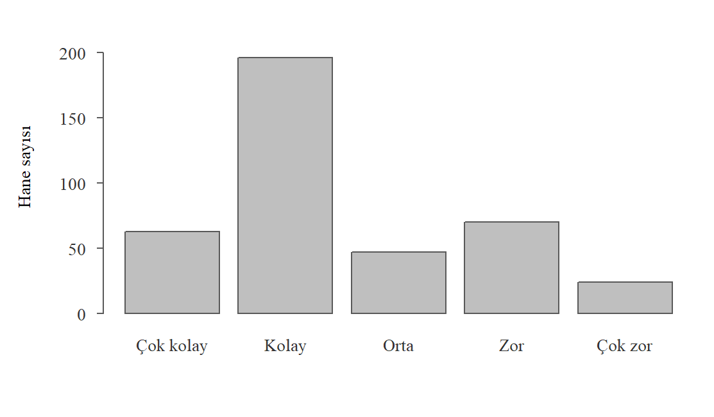
Şekil 4.1 hanelerin sağlık merkezlerine erişim kolaylığına ilişkin 1-5 ölçeğinde verdikleri cevapların çubuk çizimini, ölçeğin doğal sırasıyla (çok kolaydan çok zora) göstermektedir. Kategorileri faktör düzeyleriyle sıralamasaydık R onları alfabetik sıraya dizerdi. Aynı grafiği sıklığa göre büyükten küçüğe sıralayarak da çizebiliriz (Şekil 4.2).
frekans_tablosu <- sort(erisim_tablo, decreasing = TRUE)
frekans_tablosu_yuzde <- 100 * prop.table(frekans_tablosu)
yerler <- barplot(frekans_tablosu, col = "gray75", ylab = "Hane sayısı",
ylim = c(0, 1.15 * max(frekans_tablosu)))
# yüzdeleri çubukların üzerine yaz
text(x = yerler, y = frekans_tablosu,
labels = paste0("%", round(frekans_tablosu_yuzde, 1)), pos = 3, cex = 0.8)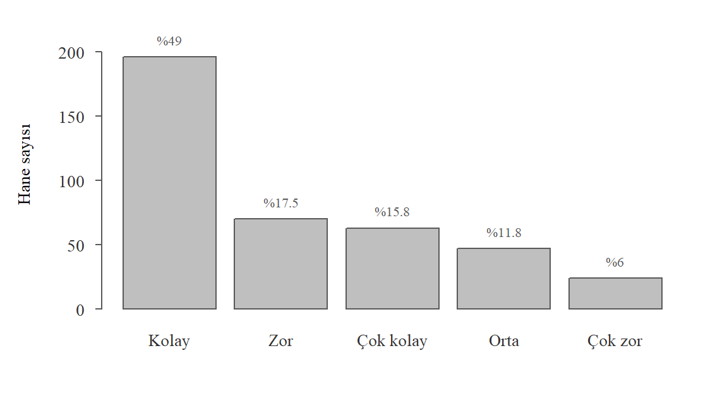
Buna göre hanelerin yüzde 49.0 kadarı sağlık merkezlerine ulaşımın kolay olduğunu düşünmektedir. Sağlık merkezlerine erişimin zor olduğunu düşünen hanelerin oranı yüzde 17.5, çok zor olduğunu söyleyen hanelerin oranı ise yüzde 6.0 kadardır.
Uygulamalarda yaygın olarak kullanılan başka bir grafik türü pasta grafiğidir. Şekil 4.3 pie() fonksiyonu ile çizilmiş örnek bir pasta grafiğini göstermektedir.
pie(erisim_tablo, col = gray.colors(5, start = 0.35, end = 0.95))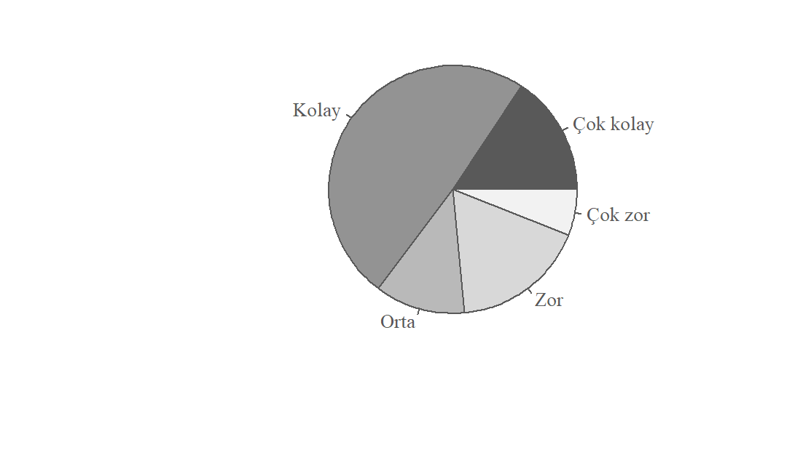
Pasta grafiğinde dilimlerin açılarını gözle karşılaştırmak zordur. Bu yüzden kategoriler arasında karşılaştırma yapılacaksa çubuk çizimi genellikle daha iyi bir tercihtir.
Örnek 4.1 Çubukların sıralanıp sıralanmayacağı değişkenin ölçüm düzeyine bağlıdır. Bunu ülke veri kümesiyle görelim (bkz. Örnek 3.4). 2022 yılı kesitini alıp önce nominal bir değişken olan bolge için frekans tablosunu oluşturalım:
load("Data/ulkeler.RData")
kesit_2022 <- subset(ulkeler, yil == 2022)
bolge_tablo <- sort(table(kesit_2022$bolge))
bolge_tablo
Kuzey Amerika Güney Asya
3 8
Orta Doğu ve Kuzey Afrika Doğu Asya ve Pasifik
21 35
Latin Amerika ve Karayipler Sahra Altı Afrika
41 47
Avrupa ve Orta Asya
57 par(mar = c(4.2, 13, 0.8, 0.8))
barplot(bolge_tablo, horiz = TRUE, las = 1, cex.names = 0.85,
col = "gray75", xlab = "Ülke sayısı")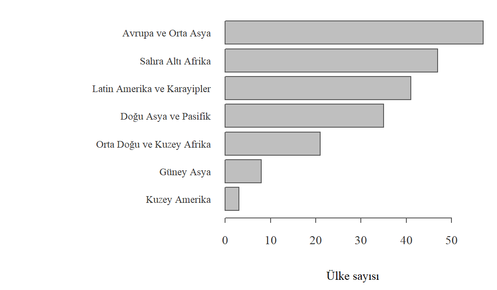
Nominal bir değişkende kategorilerin sırası keyfidir. Bu yüzden çubukları sıklığa göre sıralamak grafiği okumayı kolaylaştırır (Şekil 4.4). En çok ülke Avrupa ve Orta Asya bölgesinde (57 ülke), en az ülke ise Kuzey Amerika bölgesinde (3 ülke) bulunmaktadır. Bölge adları uzun olduğu için çubukları yatay çizdik (horiz = TRUE).
Sıralı bir değişkende ise kategorilerin kendi sırası bilgi taşır. gelir_grubu değişkeninin çubuk çizimini kategorilerin doğal sırasıyla çizelim:
barplot(table(kesit_2022$gelir_grubu), col = "gray75",
cex.names = 0.85, ylab = "Ülke sayısı")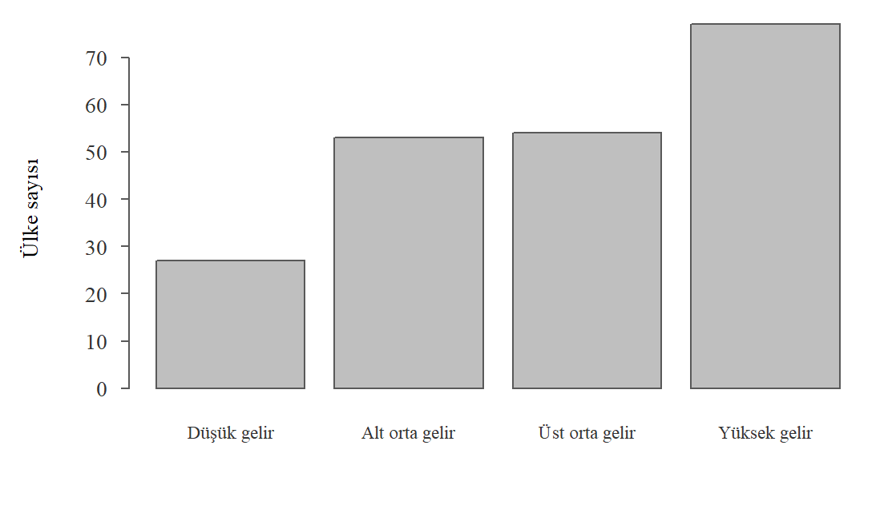
Şekil 4.5 soldan sağa gelir düzeyi arttıkça ülke sayısının nasıl değiştiğini gösterir. Çubukları sıklığa göre sıralasaydık bu sıra bozulurdu. Benzer bir durum Şekil 4.2 için de geçerlidir. Orada sağlık merkezine erişim ölçeğini sıklığa göre sıraladık. Bu grafik en sık verilen cevabı hemen görmeyi sağlar, ancak ölçeğin “Çok kolay”dan “Çok zor”a giden sırası kaybolur. Sıralı değişkenlerde çoğu zaman doğal sırayı korumak (bkz. Şekil 4.1) daha bilgilendiricidir.
Belirli bir aralıkta herhangi bir değeri alabilen sayısal değişkenleri görselleştirmenin birçok yöntemi vardır. İzleyen alt bölümlerde bunları ele alacağız.
Frekans (sıklık) tablosu özellikle büyük boyutlu sayısal verilerin yorumlanmasında yardımcı olabilir. Bunun için veriler az sayıda gruplara (sınıflara) ayrılır ve her bir sınıfa kaç gözlem düştüğü yani sıklığı (frekansı) hesaplanır. Bu sıklıklar yüzde olarak da ifade edilebilir.
Örnek 4.2 Bir eğitim seminerine katılanların yaşları kaydedilmiştir: \[ x=(22, 24, 27, 28, 30, 32, 35, 37, 40, 46). \] Bu veriyi genişliği 10 yıl olan 4 sınıfa ayıralım. Birinci grup: 15-25 yaş grubu 15 yaşında ya da daha büyük ve 25 yaşından küçük bireyleri kapsar. İkinci grup 25-35 yaş grubudur ve 25 (dahil) ile 35 (hariç) yaşları arasındaki bireyleri kapsar. Tablo 4.1 bu yaş verilerinin sıklık tablosunu göstermektedir.
| Sınıf | Sıklık (frekans) | Yüzde Sıklık | Birikimli sıklık | % Birikimli sıklık |
|---|---|---|---|---|
| 15-25 | 2 | %20 | 2 | %20 |
| 25-35 | 4 | %40 | 6 | %60 |
| 35-45 | 3 | %30 | 9 | %90 |
| 45-55 | 1 | %10 | 10 | %100 |
Frekans tablosuna (Tablo 4.1) göre 2 gözlem, yani verilerin %20’si 15-25 aralığında değerler almaktadır. Verilerin %40’ı 25-35, %30’u ise 35-45 aralığındadır.
Sayısal verilerin sınıflara ayrılmasında cut() fonksiyonu kullanılabilir:
yas <- c(22, 24, 27, 28, 30, 32, 35, 37, 40, 46)
yas_grup <- cut(yas,
breaks = c(15, 25, 35, 45,55),
right = FALSE # sağ sınır dahil değil
)
# Gruplanmış yaş verisindeki frekansları hesaplayalım
frekanslar <- table(yas_grup)
print(frekanslar)yas_grup
[15,25) [25,35) [35,45) [45,55)
2 4 3 1 prop.table(frekanslar)yas_grup
[15,25) [25,35) [35,45) [45,55)
0.2 0.4 0.3 0.1 Örnek 4.3 R ile birlikte gelen mtcars veri kümesi, 1974 yılında Motor Trend dergisinde yer alan 32 otomobilin özelliklerini içerir. Bu otomobillerin beygir gücü (hp) aşağıdaki gibidir:
beygir_gucu <- mtcars$hp
# 32 değeri 4 satır ve 8 sütunluk bir tablo olarak yazdır
matrix_data <- matrix(beygir_gucu, nrow = 4, byrow = TRUE)
matrix_data [,1] [,2] [,3] [,4] [,5] [,6] [,7] [,8]
[1,] 110 110 93 110 175 105 245 62
[2,] 95 123 123 180 180 180 205 215
[3,] 230 66 52 65 97 150 150 245
[4,] 175 66 91 113 264 175 335 109stripchart() fonksiyonunu kullanarak verilerin basit bir görsel özetini oluşturun.Çözüm
Şekil 4.6 beygir gücü verisinin nokta grafiğini göstermektedir.
# Verilerin basit bir görsel özetini stripchart() kullanarak oluştur
stripchart(beygir_gucu,
method = "stack",
main = " ",
xlab = "Beygir gücü",
col = "gray25",
pch = 16)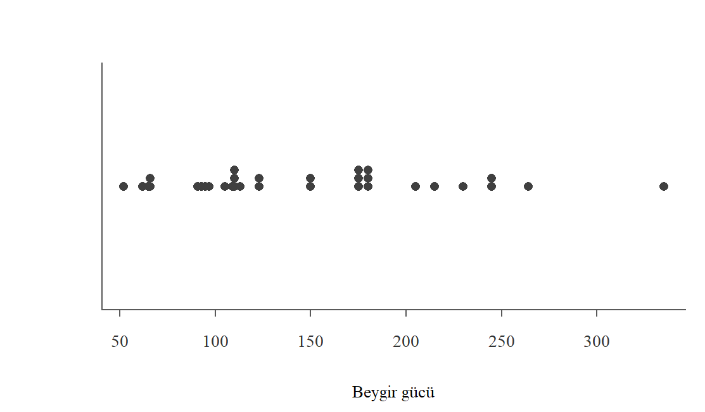
En küçük değer 52, en büyük değer 335’tir. Sınırları seq(min(beygir_gucu), max(beygir_gucu), length.out = 6) ile kurarsak 108.6 ve 165.2 gibi yuvarlak olmayan sınırlar elde ederiz. Yuvarlak sınırlar tabloyu okumayı kolaylaştırdığı için 50’den 350’ye kadar genişliği 60 olan 5 sınıf kuralım:
breaks <- seq(50, 350, by = 60)
breaks[1] 50 110 170 230 290 350Bu sınır noktalarını kullanarak frekans tablosunu oluşturalım:
# Sınıf aralıklarına göre verileri sınıflandır
beygir_gucu_cut <- cut(beygir_gucu,
breaks = breaks,
include.lowest = TRUE, # en alt sınırı dahil et
right = FALSE # sağ sınır hariç
)
# Frekans tablosunu oluştur
freq_table <- table(beygir_gucu_cut)
freq_tablebeygir_gucu_cut
[50,110) [110,170) [170,230) [230,290) [290,350]
11 8 8 4 1 \([50,110)\) aralığında (50 dahil, 110 hariç) 11 gözlem, \([110,170)\) aralığında (110 dahil, 170 hariç) 8 gözlem bulunmaktadır. Şekil 4.7 bu frekans tablosunun çubuk çizimini göstermektedir.
# Frekans tablosunu çubuk grafiği olarak çiz
barplot(freq_table,
main = " ",
xlab = "Beygir gücü sınıfları",
ylab = "Frekans",
col = "gray75",
space=0,
border = "black")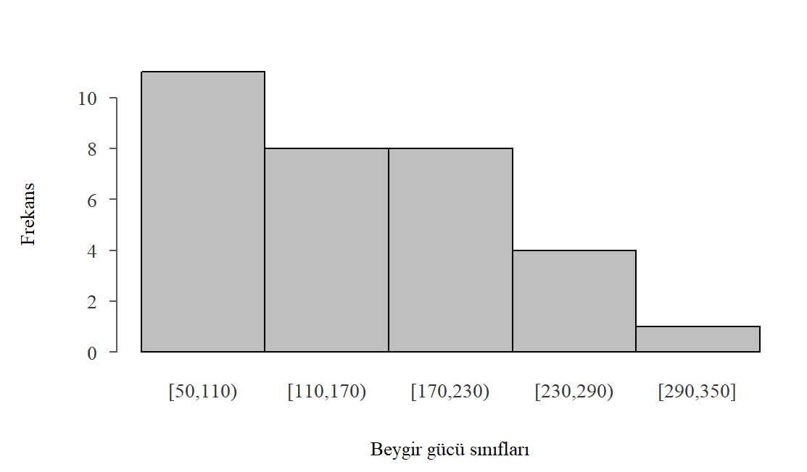
Aralıklar x ekseninde ve frekanslar y ekseninde olacak şekilde çubuk yerine nokta ile de gösterebiliriz (bkz. Şekil 4.8):
# Sınıf isimlerini al
classes <- names(freq_table)
# Çubuk grafiği yerine noktalar ve dikey çizgiler kullanarak grafiği çiz
plot(as.numeric(freq_table),
type = "p",
main = "",
xlab = "Beygir gücü sınıfları",
ylab = "Frekans",
col = "gray25",
pch = 19,
xaxt = "n",
ylim = c(0, 1.2 * max(freq_table)))
# Dikey çizgiler ekle
segments(x0 = 1:length(freq_table),
y0 = 0,
x1 = 1:length(freq_table),
y1 = freq_table,
col = "gray60",
lty = "dashed")
# X ekseni etiketlerini ekle
axis(1, at = 1:length(classes), labels = classes)
# Frekans sayılarını noktaların üzerine yerleştir
text(x = 1:length(freq_table),
y = freq_table,
label = freq_table,
pos = 3,
cex = 0.8,
col = "black")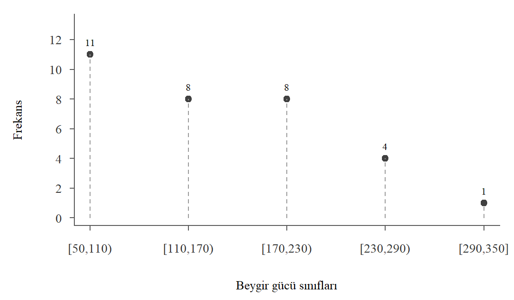
Sınıf sayısının ve genişliğinin frekans dağılımını doğrudan etkilediğine dikkat ediniz. Bu grafiğin özel bir biçimi histogram adını alır. İzleyen alt bölümlerde bu grafik türünü inceleyeceğiz.
Bir çapraz tablo iki nominal ya da ordinal değişkenin sıklıklarını gösterir. Eğer A değişkeni \(r\) grup, B değişkeni \(c\) grup içeriyorsa çapraz tablo \(r\times c\) hücreden oluşur. Her hücre o gruplara karşılık gelen gözlem sayısını içerir.
Örnek 4.4 Hanehalkı örnekleminde aylık geliri kullanarak yeni bir kategorik değişken oluşturalım. Aylık geliri 2000 TL’den düşük olanlar “Düşük”, 2000-4500 TL arasında olanlar “Orta” ve 4500 TL’den yüksek olanlar “Yüksek” gelir grubunda olsun.
load("Data/hane_ornek.RData")
hane_ornek$gelir_seviyesi <- ifelse(hane_ornek$aylik_gelir < 2000, "Düşük",
ifelse(hane_ornek$aylik_gelir <= 4500, "Orta", "Yüksek"))
hane_ornek$gelir_seviyesi <- factor(hane_ornek$gelir_seviyesi,
levels = c("Düşük", "Orta", "Yüksek"))
table(hane_ornek$gelir_seviyesi)
Düşük Orta Yüksek
109 194 97 Aylık gelir düzeyi ile sigara arasındaki \(2\times 3\) çapraz tabloyu oluşturalım:
hane_ornek$sigara <- factor(hane_ornek$sigara,
levels = c(1, 2),
labels = c("Evet", "Hayır"))
table(hane_ornek$sigara, hane_ornek$gelir_seviyesi)
Düşük Orta Yüksek
Evet 62 109 57
Hayır 47 85 40Satır ve sütun toplamlarını da ekleyerek tabloyu düzenleyelim:
capraz <- addmargins(table(hane_ornek$sigara, hane_ornek$gelir_seviyesi))
dimnames(capraz) <- list(c("Evet", "Hayır", "Toplam"), c("Düşük", "Orta", "Yüksek", "Toplam"))
knitr::kable(capraz)| Düşük | Orta | Yüksek | Toplam | |
|---|---|---|---|---|
| Evet | 62 | 109 | 57 | 228 |
| Hayır | 47 | 85 | 40 | 172 |
| Toplam | 109 | 194 | 97 | 400 |
Tablo 4.2 çapraz tabloyu göstermektedir. Toplam 400 hane içinde 62 hane düşük gelir grubundadır ve hanede sigara içilmektedir. Yüksek gelir grubundaki hanelerin 57 tanesinde sigara içen vardır, 40 hanede ise yoktur.
Bu tabloyu genel toplama, satır toplamına ya da sütun toplamına göre oran olarak ifade edebiliriz:
# genel toplama oran
tablo <- table(hane_ornek$sigara, hane_ornek$gelir_seviyesi)
prop.table(tablo) * 100
Düşük Orta Yüksek
Evet 15.50 27.25 14.25
Hayır 11.75 21.25 10.00Tüm hanelerin yüzde 21.25 kadarı orta gelir grubunda ve sigara içilmeyen hanelerdir. Diğer oranlar da benzer şekilde yorumlanabilir.
# satır toplamına oran:
prop.table(tablo, 1) * 100
Düşük Orta Yüksek
Evet 27.19298 47.80702 25.00000
Hayır 27.32558 49.41860 23.25581Bu tabloda her satırın toplamı 100’dür. Sigara içilen hanelerde orta gelirlilerin oranı yaklaşık yüzde 47.81 kadardır.
# sütun toplamına oran:
prop.table(tablo, 2) * 100
Düşük Orta Yüksek
Evet 56.88073 56.18557 58.76289
Hayır 43.11927 43.81443 41.23711Bu tabloda ise her sütunun toplamı 100’dür. Yüksek gelirli hanelerde sigara içilenlerin oranı yüzde 58.76, içilmeyenlerin oranı ise yüzde 41.24 kadardır.
Çapraz tablolar çubuk çizimi ile görselleştirilebilir (bkz. Şekil 4.9).
# Yüzde hesaplama
yuzde <- prop.table(tablo, 2) * 100 # Sütun bazında yüzde
# Yüzdeleri çubukların üzerine ekle
yuzde_yerleri <- barplot(tablo,
beside = TRUE,
col = c("firebrick", "gray70"),
main = "",
xlab = "Gelir grubu",
ylab = "Hane sayısı", ylim = c(0, 1.25 * max(tablo)),
legend.text = rownames(tablo),
args.legend = list(x = "topright", bty = "n", title = "Sigara"))
# Yüzdeleri grafiğin üzerine ekle
text(x = yuzde_yerleri,
y = as.vector(tablo),
labels = round(yuzde, 1),
pos = 3, cex = 0.8, col = "black")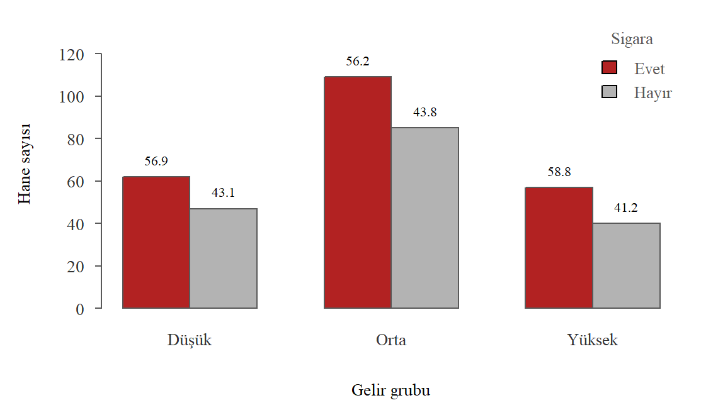
Örnek 4.5 Çapraz tablolar iş dünyasında da sık kullanılır. eticaret veri kümesinde (bkz. Tablo 3.4) ürün kategorisi ile siparişin iade edilip edilmediği arasındaki çapraz tabloyu oluşturalım:
load("Data/eticaret.RData")
iade_tablo <- table(eticaret$kategori, eticaret$iade)
iade_tablo
Evet Hayır
Giyim 1160 3978
Elektronik 179 2394
Ev ve Yaşam 268 3125
Kozmetik 131 2711
Süpermarket 27 3721
Kitap ve Hobi 70 1931Kategorilerdeki sipariş sayıları birbirinden çok farklı olduğu için frekansları doğrudan karşılaştırmak yanıltıcı olur. Her kategorinin kendi içindeki iade oranını görmek için satır yüzdelerini hesaplayalım:
round(100 * prop.table(iade_tablo, margin = 1), 1)
Evet Hayır
Giyim 22.6 77.4
Elektronik 7.0 93.0
Ev ve Yaşam 7.9 92.1
Kozmetik 4.6 95.4
Süpermarket 0.7 99.3
Kitap ve Hobi 3.5 96.5Giyim siparişlerinin yüzde 22.6 kadarı iade edilirken bu oran süpermarket siparişlerinde yüzde 0.7 kadardır. Sütun yüzdeleri ise başka bir soruyu yanıtlar. İade edilen bütün siparişlerin yüzde 63 kadarı giyim kategorisindedir. Bir yönetici “hangi kategoride iade sorunu daha ciddidir?” diye soruyorsa satır yüzdelerine, “iade işlemlerinin yükü hangi kategoriden geliyor?” diye soruyorsa sütun yüzdelerine bakmalıdır.
Dal-yaprak (stem-and-leaf) çizimi, genellikle az sayıda sayısal gözlemin dağılımını görselleştirmek için kullanılan bir yöntemdir. Bu grafik, veri değerlerini basit bir şekilde gruplandırarak dağılımın şeklini gösterir. Özellikle bilgisayar ya da hesaplama araçlarına erişimin olmadığı durumlarda, bir kağıt ve kalemle hızlıca çizilebilir.
İki basamaklı sayılardan oluşan bir veri kümesinde her gözlem iki parçaya ayrılır. Onlar basamağı dal, birler basamağı yaprak olur. Örneğin 75 değerinin dalı 7, yaprağı 5’tir. Dallar küçükten büyüğe doğru alt alta yazılır ve her dalın yanına dikey bir çizgi çekilir. Her gözlemin yaprağı kendi dalının satırına, çizginin sağına, küçükten büyüğe sıralanarak yazılır. Böylece her satırdaki yaprak sayısı o daldaki gözlem sayısını, satırların uzunluğu da dağılımın biçimini gösterir.
Üç basamaklı değerlerde dal olarak ilk iki basamak (yüzler ve onlar), yaprak olarak birler basamağı alınabilir. Örneğin 245 değerinin dalı 24, yaprağı 5 olur. Değerler geniş bir aralığa yayılmışsa sayılar onlar basamağına yuvarlanır; bu durumda dal yüzler, yaprak onlar basamağı olur. R’ın stem() fonksiyonu bu seçimi veriye göre kendisi yapar.
Örnek 4.6 Bir sınavdan alınan 100 üzerinden puanların dal-yaprak çizimini oluşturalım:
not <- c(48, 55, 87, 58, 63, 75, 95, 68, 75, 80, 60, 52, 66)
stem(not)
The decimal point is 1 digit(s) to the right of the |
4 | 8
5 | 258
6 | 0368
7 | 55
8 | 07
9 | 5Burada | işaretinin solunda kalan değerler “stem” (dal), sağında kalan değerler ise “leaf” (yaprak) olarak isimlendirilir. Buna göre bir öğrenci 48, üç öğrenci 50-60 arasında, 4 öğrenci 60-70 arasında not almıştır. Notu 75 olan iki öğrenci vardır. Ayrıca en yüksek notun 95 olduğunu ve 80-90 arasında not alan 2 öğrenci olduğunu görüyoruz.
Örnek 4.7 Beygir gücü veri kümesinin dal-yaprak çizimini hazırlayınız.
Bu veri kümesinde otomobillerin beygir gücü 52 ile 335 arasında değerler almaktadır. Onlar ve yüzler basamağını “dal”, birler basamağını “yaprak” olarak seçersek:
stem(beygir_gucu, scale = 3)
The decimal point is 1 digit(s) to the right of the |
5 | 2
6 | 2566
7 |
8 |
9 | 1357
10 | 59
11 | 0003
12 | 33
13 |
14 |
15 | 00
16 |
17 | 555
18 | 000
19 |
20 | 5
21 | 5
22 |
23 | 0
24 | 55
25 |
26 | 4
27 |
28 |
29 |
30 |
31 |
32 |
33 | 5grafiğin olası tüm basamakları içerdiğini ve boşluklar oluştuğunu görüyoruz. scale = 1 seçeneğini kullanarak grafiği daha kompakt bir şekilde çizebiliriz:
stem(beygir_gucu, scale = 1)
The decimal point is 2 digit(s) to the right of the |
0 | 5677799
1 | 0011111122
1 | 55888888
2 | 123
2 | 556
3 | 4Bu grafikte “0” 95’ten küçük iki basamaklı gözlemleri içerir. Bu değerler, 52, 62, 65, 66, 66, 91, ve 93, grafikte sırasıyla, 5, 6, 7, 7, 7, 9, ve 9 “yaprak” değerleriyle gösterilmiştir. Benzer şekilde grafikte yer alan 1 dalları 95 (dahil) ile 200 (hariç) arasındaki gözlemleri temsil etmektedir. 1 dal ve 0 yaprak değeri yaklaşık olarak 100 beygir gücünü, 1 dal ve 1 yaprak değeri yaklaşık 110 beygir gücünü göstermektedir. Diğer değerler de benzer şekilde yorumlanabilir. Sıralanmış veriler:
sort(beygir_gucu) [1] 52 62 65 66 66 91 93 95 97 105 109 110 110 110 113 123 123 150 150
[20] 175 175 175 180 180 180 205 215 230 245 245 264 335En yüksek değerin (335) dal-yaprak grafiğinde 3 dal ve 4 yaprak değeri ile temsil edildiğine dikkat ediniz.
Örnek 4.8 Türkiye’de il düzeyinde mutluluk endeksinin dal-yaprak çizimi aşağıdaki gibidir:
load("Data/mutluluk.rda")
stem(mutluluk$mutluluk)
The decimal point is 1 digit(s) to the right of the |
4 | 2
4 | 69
5 | 0012222333344
5 | 56677777778888889999
6 | 0000011111123334444
6 | 55555666788
7 | 00011122344
7 | 5668Buna göre minimum ve maksimum mutluluk endeksleri sırasıyla 42 ve 78 olarak ölçülmüştür. Değerlerin 55-65 arasında yoğunlaştığı görülebilir. Dalların ikiye bölünmesini istemiyorsak scale = 0.5 seçilebilir:
stem(mutluluk$mutluluk, scale=0.5)
The decimal point is 1 digit(s) to the right of the |
4 | 269
5 | 001222233334456677777778888889999
6 | 000001111112333444455555666788
7 | 000111223445668Bu grafik verilerin sayısal özet istatistikleri ile birlikte yorumlanabilir:
summary(mutluluk$mutluluk) Min. 1st Qu. Median Mean 3rd Qu. Max.
41.98 56.54 60.39 61.15 65.57 77.66 Sürekli değerler alan bir veri kümesinin dağılımını görselleştirmenin yaygın olarak kullanılan bir yolu gözlemlerin sınıflara ayrılması ve her sınıfa giren gözlem sayısının (frekansının) grafiğinin çizilmesidir. Bu grafik türüne histogram adı verilir.
Histogram, gözlemleri belirli aralıklara böler ve her aralıktaki gözlem sayısını ya da yüzdesini bitişik dikdörtgenlerle gösterir. Bunun için önce verinin en küçük ve en büyük değeri bulunur. Bu aralık genellikle birbirine eşit genişlikte sınıflara bölünür ve her sınıfa düşen gözlem sayısı hesaplanır. Son olarak her sınıf için, yüksekliği o sınıfın frekansına eşit bir dikdörtgen çizilir. Çubuk çiziminden farklı olarak dikdörtgenler arasında boşluk bırakılmaz, çünkü sınıflar sayı doğrusunda birbirini izler.
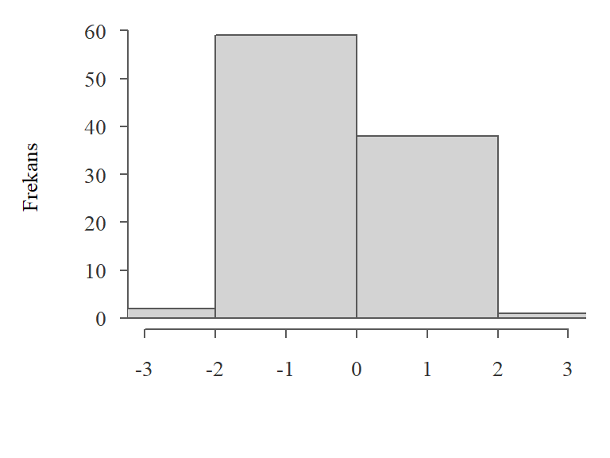
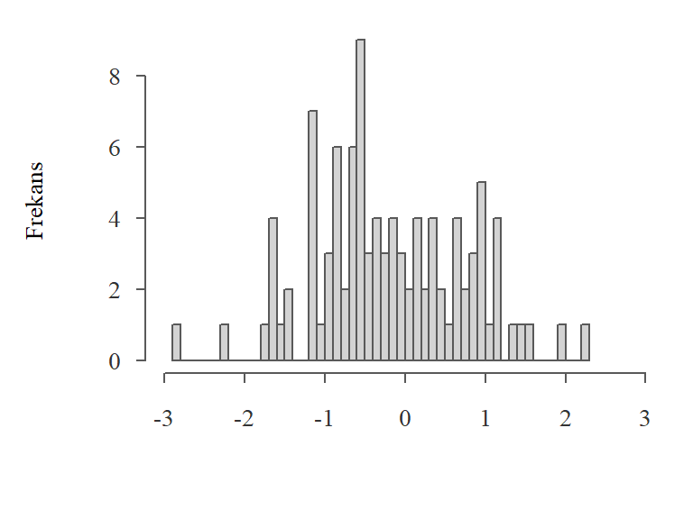
Histogram çizimindeki en önemli kararlardan biri sınıf ya da aralık sayısının belirlenmesidir. Şekil 4.10 bir veri kümesi için farklı sınıf sayısı tercihlerini göstermektedir. Sınıf sayısı gereğinden az belirlenirse verilerdeki dağılım bilgisi kaybolur. Benzer şekilde sınıf sayısı çok yüksek belirlenirse çubuk sayısı artar, sınıflar arasında boşluklar oluşur ve dağılım fazla inişli çıkışlı olur. hist() fonksiyonundaki breaks argümanına verilen sayının yalnızca bir öneri olduğuna da dikkat ediniz. R sınırları yuvarlak sayılara denk getirmek için sınıf sayısını değiştirebilir. Örneğin Şekil 4.10 (a) breaks = 2 ile çizildiği halde 4 sınıf, Şekil 4.10 (b) ise breaks = 40 ile çizildiği hâlde 52 sınıf içerir.
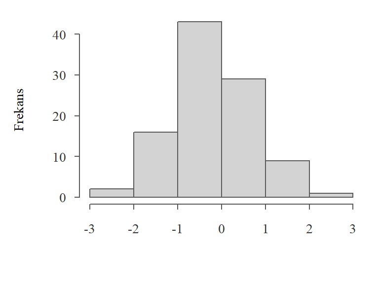
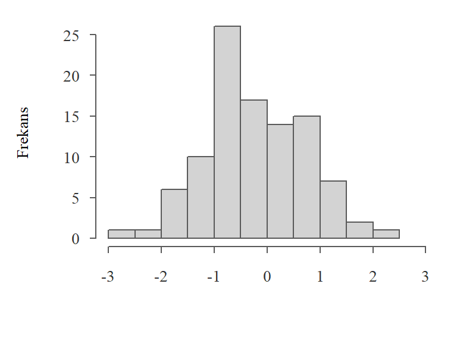
Şekil 4.11 aynı veri kümesi için sınıf sayısının 6 ve 11 olduğu iki durumu göstermektedir. Her iki sınıf sayısı için histogramın şeklinin yaklaşık olarak simetrik olduğunu görüyoruz. Sınıf sayısını ya da sınıf aralıklarını deneme yanılma ile belirlemek de mümkündür. Pratikte gözlem sayısına bağlı olarak sınıf sayısını belirleyebiliriz.
Histogramdaki sınıf sayısını belirlemek için çeşitli yardımcı formüller önerilmiştir. Sturges formülü gözlem sayısına bağlı olarak önerilen sınıf sayısını verir: \[ h = 1+\log_2(n) \] Burada \(h\) sınıf sayısı ve \(n\) gözlem sayısıdır; sonuç yukarı yuvarlanır. Bu formül daha büyük veri kümeleri için daha fazla, daha küçük veri kümeleri için daha az sınıf önerir.
İzleyen iki kural ise sınıf sayısını değil sınıf genişliğini önerir ve verinin yayılımını ölçen birer özet ölçüsü kullanır. Bu ölçüler bir sonraki bölümde tanımlanıyor (Bölüm 5), burada yalnız sınıf genişliğini belirlemekte kullanıldıklarını belirtmekle yetiniyoruz.
Freedman-Diaconis kuralı önerilen genişliği verinin yayılımına ve gözlem sayısına bağlar:
\[ bw = 2~IQR(x)~ n^{-1/3} \] Burada \(bw\) sınıf genişliğini, IQR ise kartiller arası farkı (\(Q_3-Q_1\)) göstermektedir. Sınıf sayısı, veri aralığının bu genişliğe bölünmesiyle bulunur.
Scott kuralı da sınıf genişliğini önerir, ancak yayılım ölçüsü olarak standart sapmayı kullanır: \[ bw = 3.5\, s\, n^{-1/3} \] Burada \(s\) verilerin örneklem standart sapmasını göstermektedir.
Örnek 4.9 Mutluluk verileri için önerilen sınıf sayılarını hesaplayalım:
sturges <- nclass.Sturges(mutluluk$mutluluk)
scott <- nclass.scott(mutluluk$mutluluk)
fd <- nclass.FD(mutluluk$mutluluk)
c(Sturges = sturges, Scott=scott, Freedman_Diaconis = fd) Sturges Scott Freedman_Diaconis
8 6 9 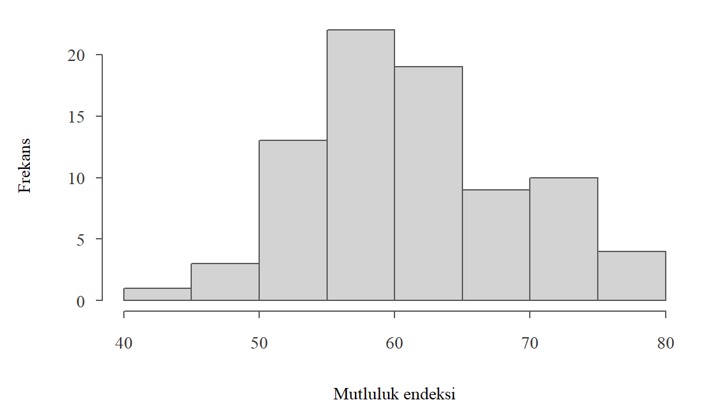
Şekil 4.12 mutluluk endeksinin histogramını göstermektedir. Sınıf sayısı 8 olarak belirlenmiştir. Bu histograma göre mutluluk düzeyinin merkezi eğiliminin 60 civarında olduğunu söyleyebiliriz. Mutluluk düzeyi azaldıkça ve arttıkça frekans azalmaktadır. Bu veri kümesinde ortalama ve medyan sırasıyla 61 ve 60 olarak bulunur:
summary(mutluluk$mutluluk) Min. 1st Qu. Median Mean 3rd Qu. Max.
41.98 56.54 60.39 61.15 65.57 77.66 R’da histogramın çiziminde kullanılan istatistikleri görmek istersek aşağıdaki kodu çalıştırabiliriz:
hist_mutluluk <- hist(mutluluk$mutluluk, breaks = 8, plot = FALSE)
str(hist_mutluluk)List of 6
$ breaks : int [1:9] 40 45 50 55 60 65 70 75 80
$ counts : int [1:8] 1 3 13 22 19 9 10 4
$ density : num [1:8] 0.00247 0.00741 0.0321 0.05432 0.04691 ...
$ mids : num [1:8] 42.5 47.5 52.5 57.5 62.5 67.5 72.5 77.5
$ xname : chr "mutluluk$mutluluk"
$ equidist: logi TRUE
- attr(*, "class")= chr "histogram"hist() fonksiyonu birbirine eşit aralıklı sınıfları (breaks) ve her sınıfa düşen gözlem sayısını (counts) gösterir. Sınıf (bin) genişliği 5 birimdir. Histogramdaki her dikdörtgenin yüksekliği o sınıfa düşen gözlem sayısına eşittir. Sınıf aralıklarının tanımı \((a, b]\) (right = TRUE) ya da \([a,b)\) (right = FALSE) olarak seçilebilir.
Yoğunluk (density) her sınıfa düşen gözlem sayısının (counts) gözlem sayısı ve sınıf genişliğine oranıyla bulunur. Örneğin 40-45 aralığında sadece 1 gözlem vardır. Toplam gözlem sayısı 81 ve sınıf genişliği 5 olduğu için yoğunluk \(1/(81\times 5)\) olur:
1 / (length(mutluluk$mutluluk) * 5)[1] 0.002469136yaklaşık 0.00247 olarak bulunur.
$mids sınıfların orta noktalarını göstermektedir.
Sınıflar ve frekanslar cut() fonksiyonuyla da hesaplanabilir. hist() sınıfları öntanımlı olarak \((a,b]\) biçiminde, yani sağ sınırı dahil ederek kurar. Bu veride hiçbir değer tam olarak bir sınıf sınırına denk gelmediği için aşağıdaki right = FALSE seçeneği aynı frekansları verir:
m_cut <- cut(mutluluk$mutluluk, breaks=seq(40,80,5), right=FALSE)
table(m_cut)m_cut
[40,45) [45,50) [50,55) [55,60) [60,65) [65,70) [70,75) [75,80)
1 3 13 22 19 9 10 4 Buradan frekans tablosunu aşağıdaki gibi oluşturabiliriz:
# Mutluluk endeksi için frekans tablosu
n <- length(mutluluk$mutluluk)
genislik <- 5
frekans <- table(m_cut)
goreli_frekans <- 100 * frekans / n
birikimli_yuzde <- cumsum(goreli_frekans)
yogunluk <- frekans / (n * genislik)
cbind(frekans,
goreli_frekans = round(goreli_frekans, 2),
birikimli_yuzde = round(birikimli_yuzde, 2),
yogunluk = round(yogunluk, 5)) frekans goreli_frekans birikimli_yuzde yogunluk
[40,45) 1 1.23 1.23 0.00247
[45,50) 3 3.70 4.94 0.00741
[50,55) 13 16.05 20.99 0.03210
[55,60) 22 27.16 48.15 0.05432
[60,65) 19 23.46 71.60 0.04691
[65,70) 9 11.11 82.72 0.02222
[70,75) 10 12.35 95.06 0.02469
[75,80) 4 4.94 100.00 0.00988Sayısal değerler alan bir değişkenin yoğunluk grafiği düzleştirilmiş histogram olarak yorumlanabilir. Sınıf aralıkları daraldıkça (ya da sınıf sayısı arttıkça) histogram yoğunluk fonksiyonuna yaklaşır. Bu yaklaşım gözlem sayısı büyük olduğunda geçerlidir; az sayıda gözlemde sınıflar daraldıkça histogram düzleşmek yerine dişli bir görünüm alır. Şekil 4.13 10000 gözlemle çizilmiştir.
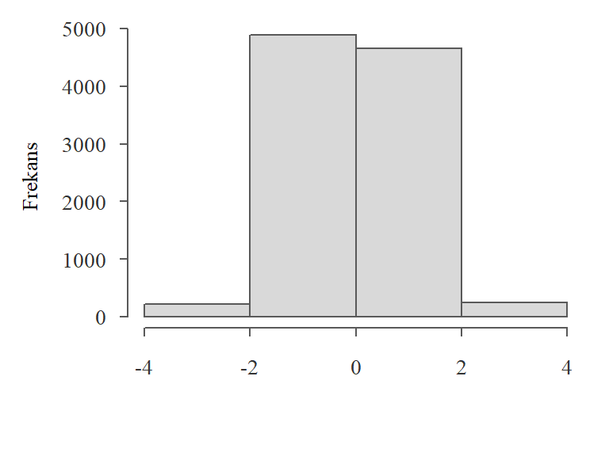
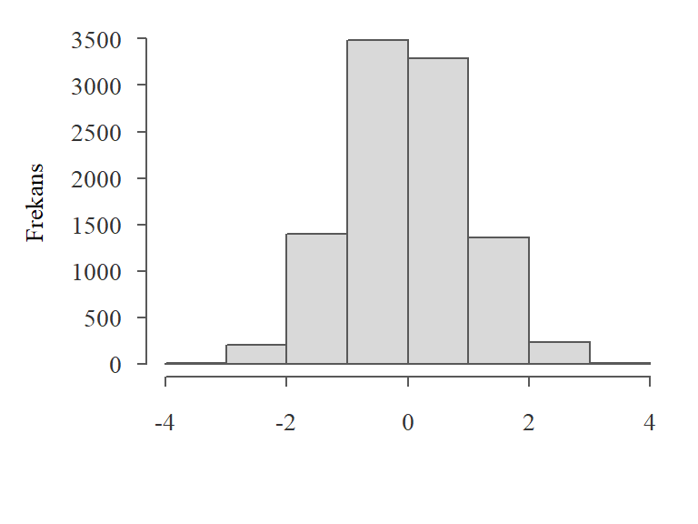
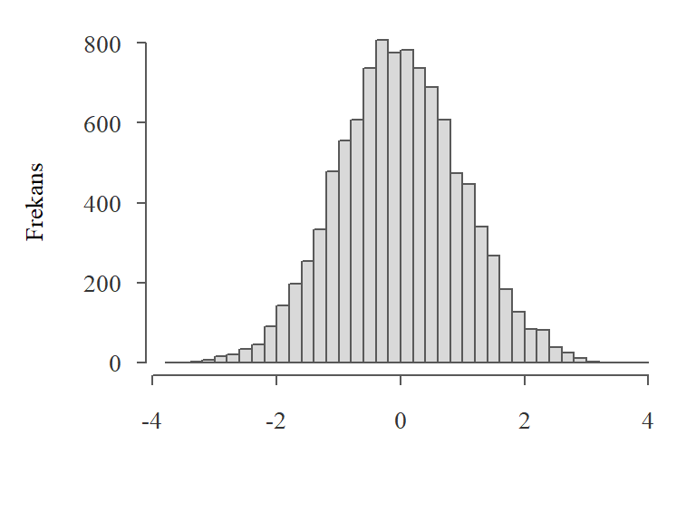
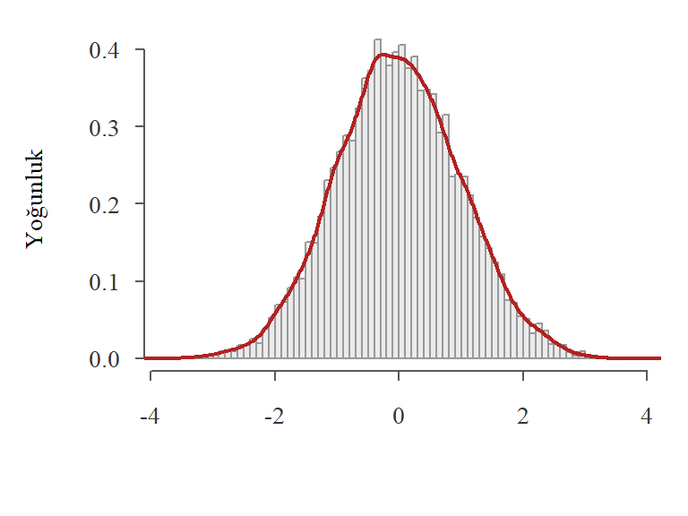
Şekil 4.13 histogram ve yoğunluk arasındaki ilişkiyi göstermektedir. Bu grafikte sınıf sayısı arttıkça histogramın yoğunluk fonksiyonuna yaklaştığına dikkat ediniz (bkz. Şekil 4.13 (d)). Histogram yorumunda olduğu gibi dağılımın merkezine doğru yaklaştıkça yoğunluk artmaktadır. Görece daha az sıklıkta gerçekleşen değerler için yoğunluk daha düşük değerler alır. İzleyen bölümlerde buradan hareketle olasılıkları nasıl hesaplayabileceğimizi öğreneceğiz.
R density() fonksiyonunu kullanarak yoğunlukları hesaplayabilir ve görselleştirebiliriz.
Örnek 4.10 İllere göre mutluluk endeksinin yoğunluk grafiğini çiziniz.
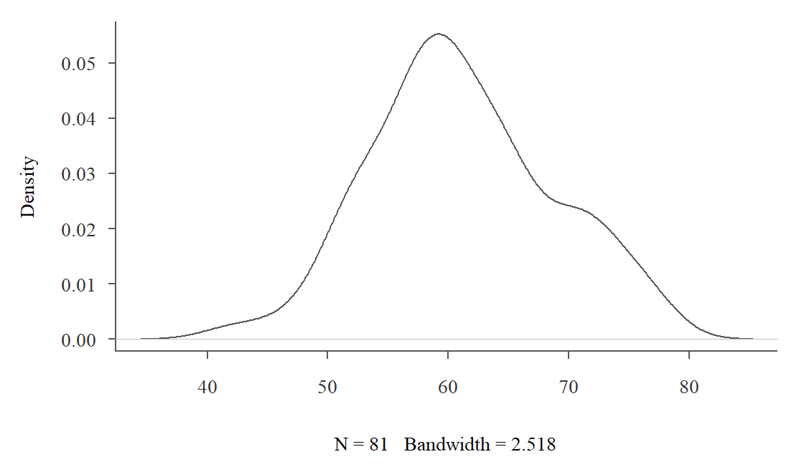
Yoğunluk ya da düzleştirilmiş histograma göre gözlem değerleri 55-65 arasında “yoğunlaşmaktadır” (Şekil 4.14). Sol ve sağ kuyruklara doğru gidildikçe yoğunluk azalmaktadır.
Histogram ve yoğunluğu birlikte de çizebiliriz (bkz. Şekil 4.15)
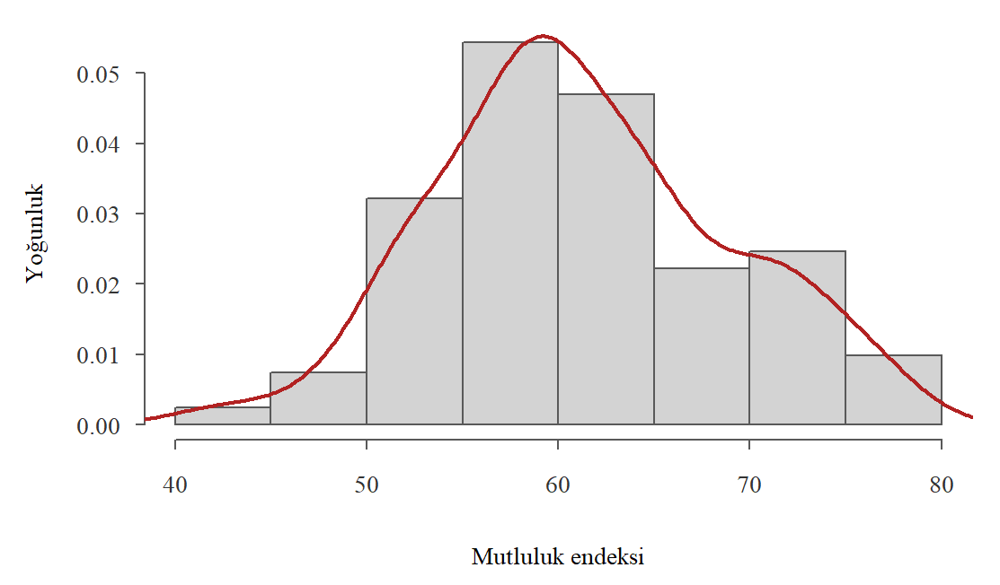
Yoğunluk fonksiyonunun ayrıntıları için yardım dosyasına bakınız: ?density.
Histogram ya da yoğunluk grafikleri dağılımın simetriklik, sağa ve sola çarpıklık gibi özelliklerine ilişkin önemli bilgiler verir. Simetrik bir dağılımın merkezinin iki tarafı birbirine benzer. Şekil 4.16 simetrik dağılan üç histogramı göstermektedir. Ortalamadan geçen dikey çizginin iki tarafı birbirine benzer şekle sahiptir.
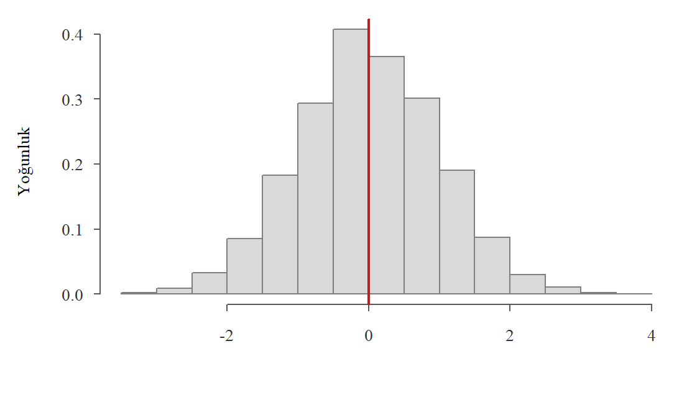
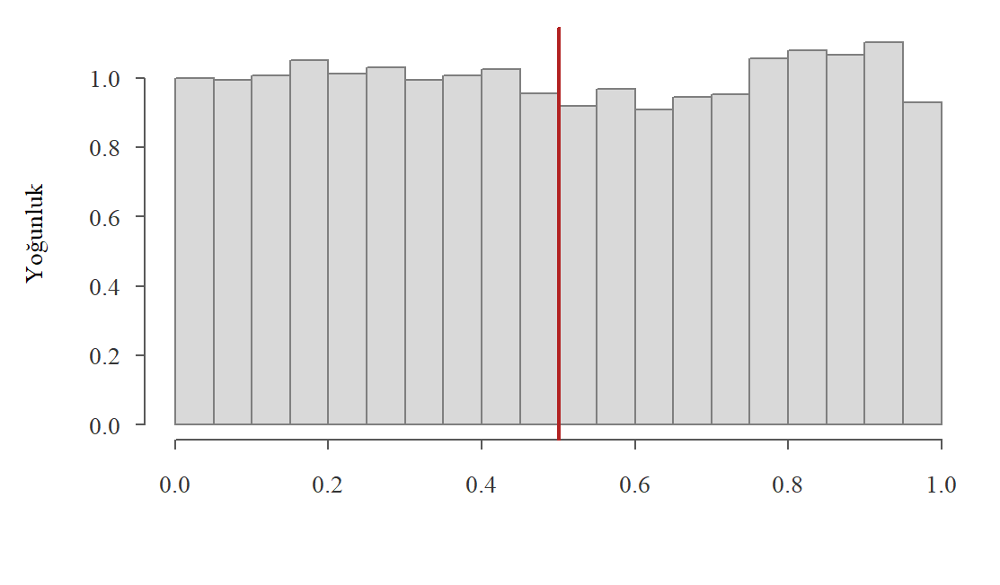
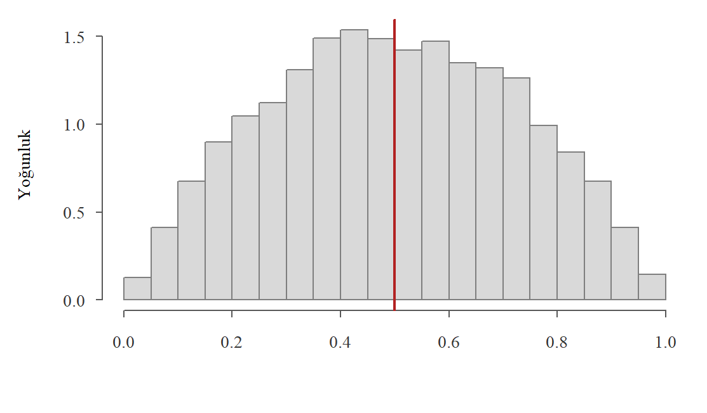
Simetrik bir dağılımın iki kuyruğu birbirine benzer. Kuyruklardan biri ötekinden belirgin biçimde uzunsa dağılım çarpıktır.
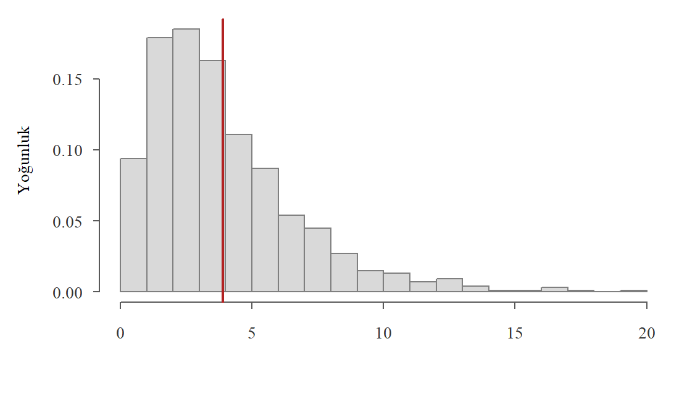
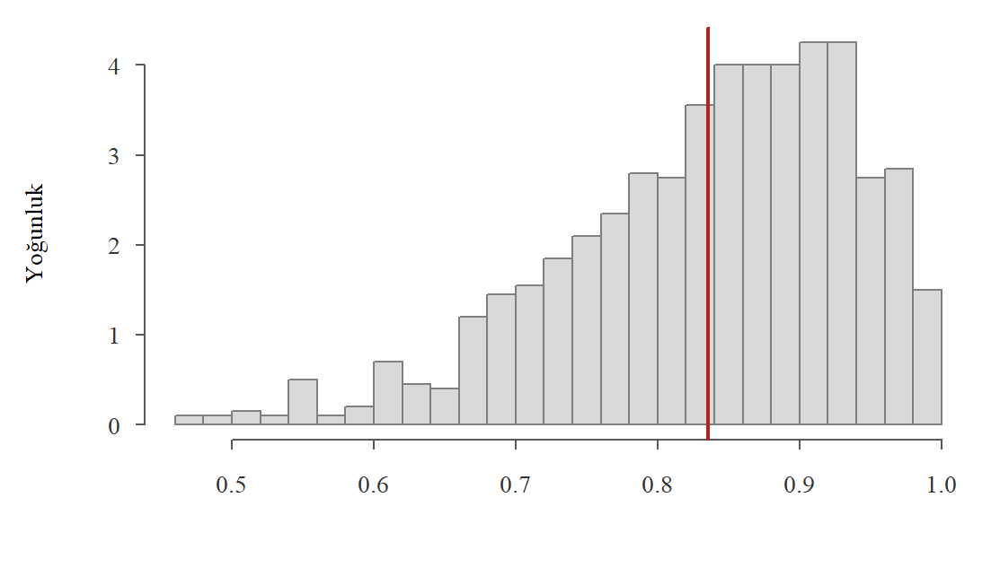
Şekil 4.17 simetrik olmayan dağılımları göstermektedir. Sağa çarpık dağılımların sağ kuyruğu daha uzundur. Böyle bir dağılımda yoğunlaşma küçük ve orta değerlerdedir. Örneğin ücretler, hane geliri ve harcaması, ve ev fiyatları tipik olarak sağa çarpık dağılır. Sola çarpık bir dağılımda ise sol kuyruk daha uzundur. Değerler büyüdükçe yoğunlaşma artmaktadır. Çok zorlayıcı olmayan bir sınavda not dağılımı sola çarpık olabilir. Çok sayıda öğrenci yüksek not alırken daha az sayıda öğrenci düşük notlar alır. Başka bir örnek emeklilik yaşı olabilir.
Örnek 4.11 Gerçek verilerde bu biçimlerle sıkça karşılaşırız. Ülke veri kümesinde 2022 yılı için kişi başına GSYİH’nin dağılımına bakalım. Ülkeler arasında karşılaştırma yapılacağı için satın alma gücü paritesiyle hesaplanmış seriyi (kisi_basi_gsyih_sagp) kullanıyoruz.
gsyih <- kesit_2022$kisi_basi_gsyih_sagp
hist(gsyih / 1000, breaks = 15, main = "", col = "gray85",
xlab = "Bin uluslararası dolar", ylab = "Frekans")
hist(log10(gsyih), breaks = 15, main = "", col = "gray85",
xlab = "log10(kişi başına GSYİH)", ylab = "Frekans")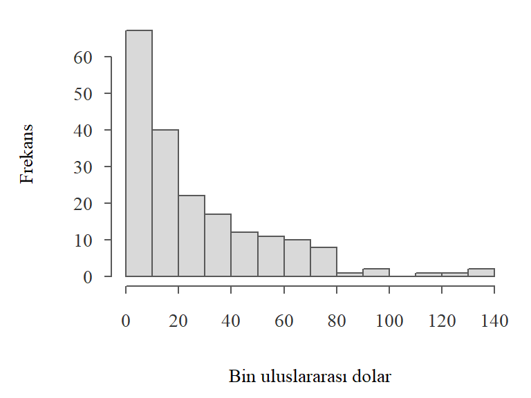
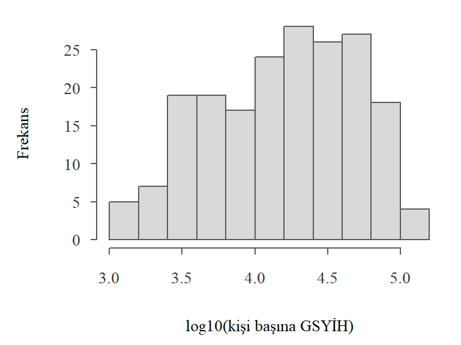
Şekil 4.18 (a) kişi başına GSYİH verisi bulunan 194 ülkenin dağılımını göstermektedir. Dağılım belirgin biçimde sağa çarpıktır. Ülkelerin yüzde 55 kadarında kişi başına GSYİH 20 bin doların altındayken 4 ülkede 100 bin doları aşmaktadır.
Gelir gibi sağa çarpık değişkenlerde logaritma dönüşümü sık kullanılır. Logaritma büyük değerleri küçük değerlerden daha fazla sıkıştırır. Dönüştürülmüş değişkenin dağılımında (Şekil 4.18 (b)) uzun sağ kuyruk ortadan kalkmış, gözlemler yatay eksene çok daha dengeli yayılmıştır. 10 tabanında logaritmada 3, 4 ve 5 değerleri sırasıyla 1000, 10000 ve 100000 dolara karşılık gelir. Yani yatay eksende bir birimlik artış gelirin on katına çıkması demektir.
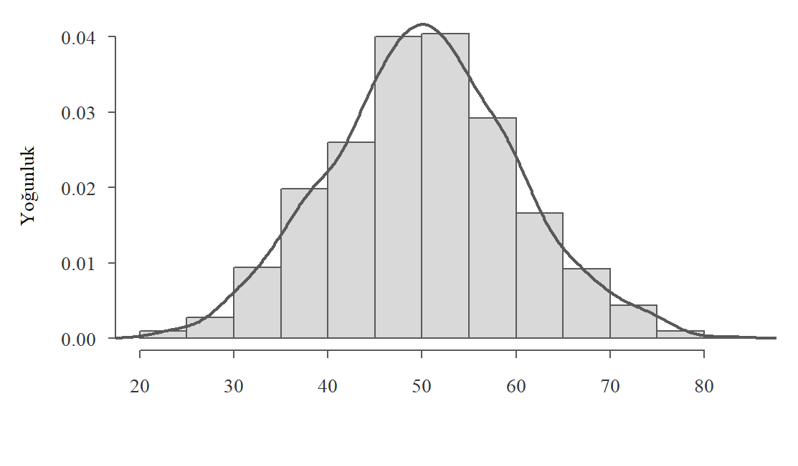
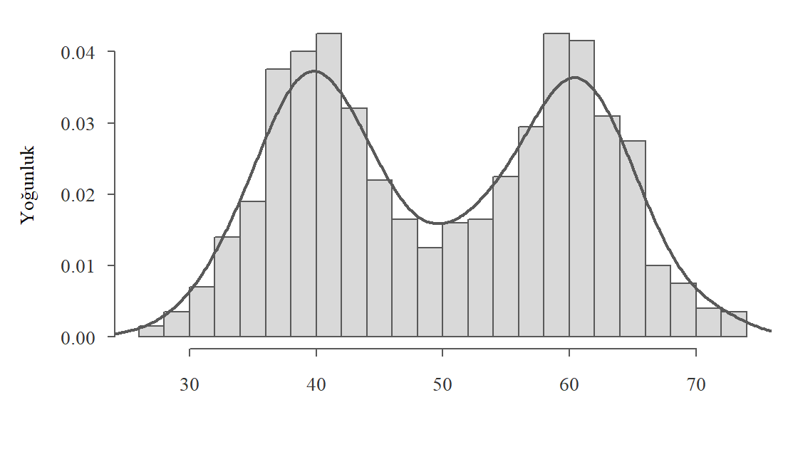
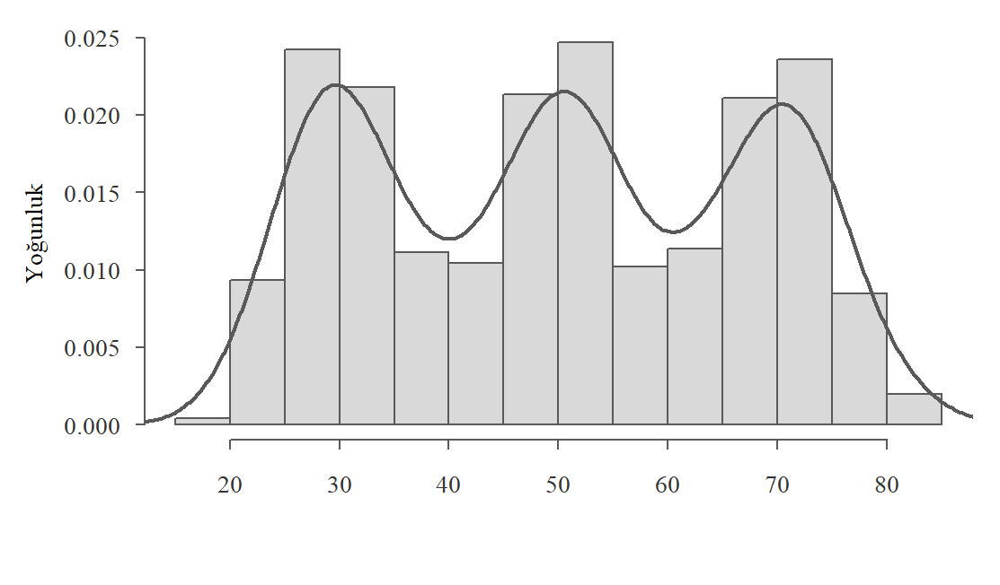
Histogramların önemli bir başka özelliği de tepe sayısıdır (modallik). Tepe sayısı, dağılımda kaç tane belirgin tepe noktası (mod) olduğunu gösterir ve verilerin farklı alt gruplara bölünmesi gerektiğine işaret edebilir.
Tek tepeli (unimodal) bir dağılımda (bkz. Şekil 4.19 (a)) histogramın yalnızca bir belirgin tepe noktası vardır. Verinin büyük çoğunluğu belirli bir değerde toplanmıştır. İki tepe noktası olan dağılımlar çift tepeli olarak adlandırılır (Şekil 4.19 (b)). Bu tür dağılımlar, genellikle verinin iki farklı grup veya popülasyondan geldiğini gösterebilir. Örneğin, erkek ve kadın bireylerin boy dağılımı çift tepeli olabilir. Üç veya daha fazla tepe noktası olan dağılımlar çok tepeli olarak adlandırılır (Şekil 4.19 (c)). Bu durum, verinin farklı alt gruplardan oluştuğunu veya karmaşık bir yapıya sahip olduğunu gösterebilir.
Örnek 4.12 Metinde verdiğimiz boy örneğini gerçek bir veriyle görelim. ogrenci_anket veri kümesinde (bkz. Tablo 3.4) öğrencilerin boy dağılımını görelim (Şekil 4.20 (a)).
load("Data/ogrenci_anket.RData")
sinirlar <- seq(150, 195, by = 5)
hist(ogrenci_anket$boy, breaks = sinirlar, main = "", col = "gray85",
xlab = "Boy (cm)", ylab = "Frekans")
kadin <- ogrenci_anket$boy[ogrenci_anket$cinsiyet == "Kadın"]
erkek <- ogrenci_anket$boy[ogrenci_anket$cinsiyet == "Erkek"]
hist(kadin, breaks = sinirlar, main = "", col = adjustcolor("firebrick", 0.5),
xlab = "Boy (cm)", ylab = "Frekans", ylim = c(0, 20))
hist(erkek, breaks = sinirlar, col = adjustcolor("gray40", 0.5), add = TRUE)
legend("topright", legend = c("Kadın", "Erkek"), bty = "n", cex = 0.8,
fill = c(adjustcolor("firebrick", 0.5), adjustcolor("gray40", 0.5)))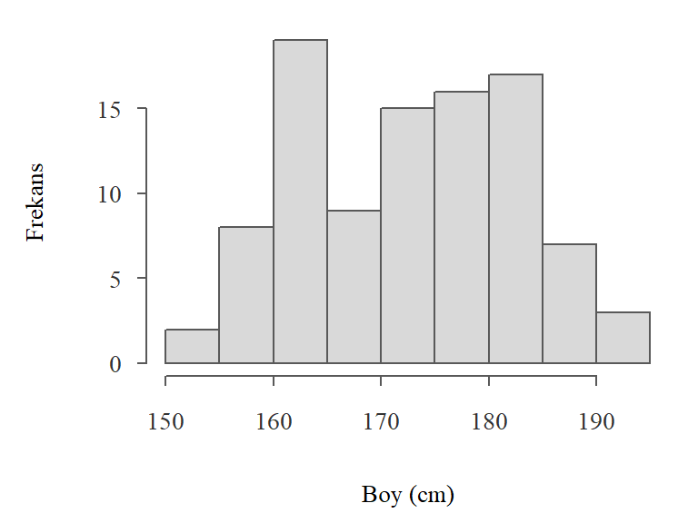
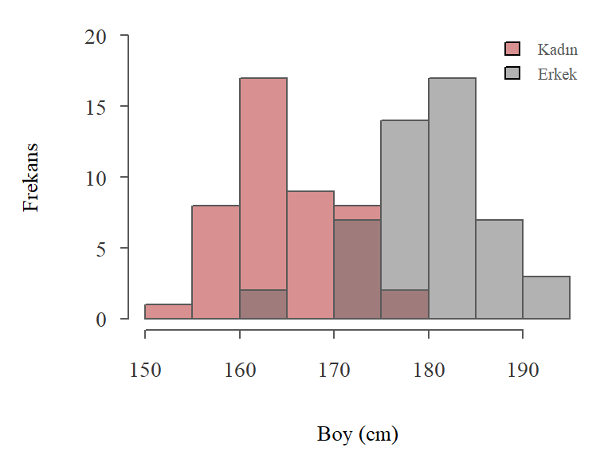
Bütün öğrencilerin histogramında iki tepe vardır. Birincisi 160-165 cm, ikincisi 175-185 cm aralığındadır ve aralarında görece az öğrencinin bulunduğu bir çukur yer alır. Cinsiyete göre ayrı ayrı çizdiğimizde (Şekil 4.20 (b)) çift tepenin kaynağı ortaya çıkar. Kadın öğrencilerin ortalama boyu 165.7 cm, erkek öğrencilerinki 180.6 cm olarak bulunur. İki grubun her birinin dağılımı tek tepelidir; iki grup bir araya geldiğinde çift tepeli bir dağılım ortaya çıkar.
Gözlem sayısı küçük olduğunda histogramdaki tepelerin sınıf sınırlarının seçimine duyarlı olduğunu da unutmamak gerekir. Burada çift tepenin anlamlı bir açıklaması, yani iki farklı grubun varlığı olduğu için bu yoruma güvenebiliyoruz.
Örnek 4.13 Çift tepeli bir dağılıma gerçek veriden bir örnek verelim. Şekil 4.21 ülkelerde toplam doğurganlık hızının, yani bir kadının hayatı boyunca doğurması beklenen ortalama çocuk sayısının, 1960 ve 2022 yıllarındaki dağılımını göstermektedir.
dog_1960 <- ulkeler$dogurganlik[ulkeler$yil == 1960]
dog_2022 <- kesit_2022$dogurganlik
sinirlar <- seq(0, 9, by = 0.5)
# iki grafikte dikey eksen aynı olsun
ust <- max(hist(dog_1960, breaks = sinirlar, plot = FALSE)$counts,
hist(dog_2022, breaks = sinirlar, plot = FALSE)$counts)
hist(dog_1960, breaks = sinirlar, ylim = c(0, ust), main = "", col = "gray85",
xlab = "Kadın başına doğum", ylab = "Frekans")
hist(dog_2022, breaks = sinirlar, ylim = c(0, ust), main = "", col = "gray85",
xlab = "Kadın başına doğum", ylab = "Frekans")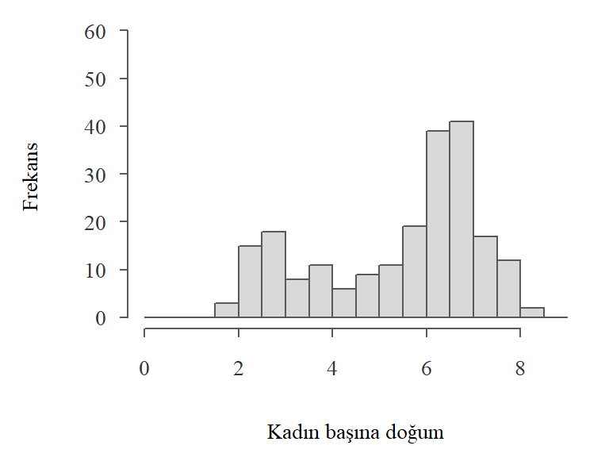
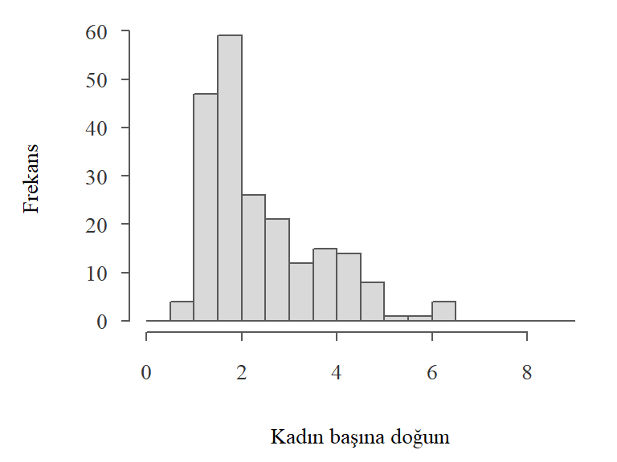
1960 yılındaki dağılımda (Şekil 4.21 (a)) iki tepe vardır. Birinci ve daha alçak tepe kadın başına 2.5-3 doğum civarındadır. Bu bölgede o dönemin sanayileşmiş ülkeleri yer alır. İkinci ve daha yüksek tepe ise 6-7 doğum civarındadır ve o dönemdeki gelişmekte olan ülkelerin çoğunu kapsar. İki tepe arasında görece az ülkenin bulunduğu bir çukur vardır. Dağılımın çift tepeli olması, ülkelerin doğurganlık bakımından birbirinden farklı iki gruptan oluştuğuna işaret eder.
2022 yılına gelindiğinde tablo değişmiştir (Şekil 4.21 (b)). Doğurganlık hızı ülkelerin çoğunda düşmüş, dağılım medyanı 2.0 olan, tek tepeli ve sağa çarpık bir biçim almıştır. İki grafikte yatay ve dikey eksen sınırlarını aynı tuttuğumuza dikkat edin. Farklı dönemlerin ya da grupların histogramlarını karşılaştırırken ortak eksenler kullanmak, farkı gözle doğru değerlendirebilmek için gereklidir.
Histogram, sınıf frekanslarını bitişik dikdörtgenlerle gösterir. Aynı bilgiyi çizgiyle göstermenin iki yolu daha vardır.
Frekans poligonu, her sınıfın orta noktasında frekansı işaretleyip bu noktaları düz çizgilerle birleştirmekle elde edilir. Çizgi iki uçta sıfıra indirilir, yani veri bulunmayan komşu iki sınıfın orta noktası da grafiğe katılır. Böylece kapalı bir çokgen ortaya çıkar ve poligonun altında kalan alan histogramın toplam alanına eşit olur.
Poligonun pratik bir kolaylığı, aynı eksen üzerine birden fazla poligonun rahatça çizilebilmesidir, çünkü çizgiler birbirinin altında kalan alanı kapatmaz. Histogramlar da üst üste çizilebilir, bunun için saydam renkler kullanmak ya da çubukları yan yana yerleştirmek gerekir. İki grubun dağılımını karşılaştırırken hangisinin kullanılacağı veriye, grup sayısına ve okunabilirliğe bağlıdır. Karşılaştırılan grup sayısı arttıkça poligon daha okunur kalabilir, buna karşılık histogram sınıf sınırlarını ve frekansları daha açık gösterir.
Birikimli frekans eğrisi ya da yaygın adıyla ogive, her sınıfın üst sınırında o sınıfa kadar biriken frekansı işaretleyip noktaları birleştirmekle çizilir. Başlangıç noktası ilk sınıfın alt sınırıdır ve orada birikimli frekans sıfırdır. Eğri hiçbir zaman azalmaz, çünkü birikimli frekans her adımda ya artar ya aynı kalır. Son noktada toplam gözlem sayısına, göreli frekanslarla çizilmişse 1’e (yüzde 100’e) ulaşır.
Ogive’in asıl kullanımı şu sorunun yanıtlanmasıdır. “Gözlemlerin kaçı belirli bir değerden küçüktür?” Dikey eksenden yatay eksene doğru okuma yapılırsa ters soru da yanıtlanır. “Gözlemlerin yüzde ellisi hangi değerin altındadır?” Bu ikinci okumayla bulunan değerlerin adları ve hesaplanma yöntemleri bir sonraki bölümün konusudur (Bölüm 5).
Örnek 4.14 Tablo 4.1 ile verilen yaş verilerinin frekans poligonunu ve birikimli frekans eğrisini çiziniz.
Çözüm
Poligon için sınıf orta noktaları, ogive için sınıf üst sınırları gerekir. Frekans tablosunu yeniden kuralım.
yas <- c(22, 24, 27, 28, 30, 32, 35, 37, 40, 46)
sinir <- c(15, 25, 35, 45, 55)
frekans <- as.numeric(table(cut(yas, breaks = sinir, right = FALSE)))
orta <- (sinir[-length(sinir)] + sinir[-1]) / 2 # sınıf orta noktaları
birikimli <- cumsum(frekans)
data.frame(sinif = paste0("[", sinir[-5], ",", sinir[-1], ")"),
orta_nokta = orta,
frekans = frekans,
goreli = frekans / length(yas),
birikimli = birikimli,
birikimli_yuzde = 100 * birikimli / length(yas)) sinif orta_nokta frekans goreli birikimli birikimli_yuzde
1 [15,25) 20 2 0.2 2 20
2 [25,35) 30 4 0.4 6 60
3 [35,45) 40 3 0.3 9 90
4 [45,55) 50 1 0.1 10 100Poligonu kapatmak için iki uca birer boş sınıf ekliyoruz, yani orta noktaları 10 ve 60 olan ve frekansı sıfır olan sınıflar. Ogive ise 15 yaşında sıfırdan başlıyor.
# (a) frekans poligonu, histogramın üzerine çizilmiştir
hist(yas, breaks = sinir, right = FALSE,
col = "gray92", border = "gray60",
main = "", xlab = "Yaş", ylab = "Frekans",
xlim = c(10, 60), ylim = c(0, 5), xaxt = "n")
axis(1, at = c(10, sinir, 60))
lines(c(10, orta, 60), c(0, frekans, 0), type = "b", pch = 16, lwd = 2)
# (b) ogive, birikimli frekanslar sınıf ÜST sınırlarında işaretlenir
plot(c(15, sinir[-1]), c(0, birikimli), type = "b", pch = 16, lwd = 2,
xlab = "Yaş", ylab = "Birikimli frekans",
ylim = c(0, 10), xaxt = "n", yaxt = "n")
axis(1, at = sinir)
axis(2, at = c(0, 2, 5, 6, 9, 10), las = 1)
abline(h = 5, col = "firebrick", lty = 2)
abline(v = 32.5, col = "firebrick", lty = 2)
text(32.5, 0.6, "32.5", pos = 4, col = "firebrick", cex = 0.9)
grid(nx = NA, ny = NULL, col = "gray85")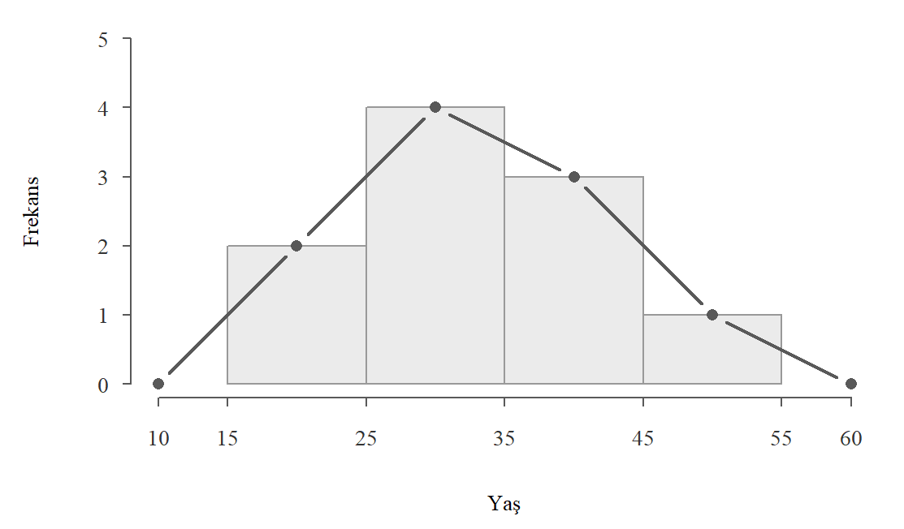
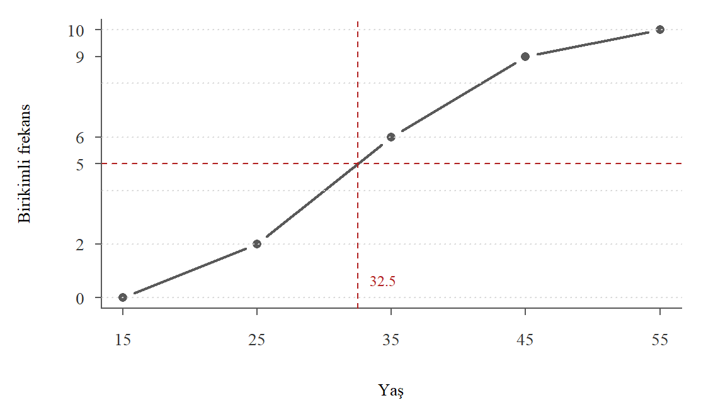
Şekil 4.22 (a) poligonu histogramın üzerine çizilmiş biçimde göstermektedir. Poligonun tepe noktası 25-35 sınıfının orta noktasındadır, çünkü en yüksek frekans oradadır.
Şekil 4.22 (b) ogive’i göstermektedir. Eğri 15 yaşında sıfırdan başlar ve 55 yaşında 10’a, yani toplam gözlem sayısına ulaşır. Kesikli çizgiler grafiğin nasıl okunduğunu gösterir. Dikey eksende 5 seviyesinden, yani gözlemlerin yarısından yatay bir çizgi çekilir, eğriyi kestiği noktadan aşağı inilir ve yaklaşık 32.5 değeri bulunur. Buna göre gözlemlerin yarısı yaklaşık 32.5 yaşın altındadır.
Grafikten okunan bu değer bir kestirimdir. Frekans tablosu kurulurken gözlemlerin tek tek değerleri atılmış, yerine “bu sınıfta şu kadar gözlem var” bilgisi konmuştur. Ogive’i çizerken sınıf içinde gözlemlerin düzgün dağıldığını varsaydığımız için okunan değer ham veriden bulunacak değerden biraz sapar. Gruplanmış veriden yapılan bütün okumalar bu tür bir bilgi kaybı taşır.
Poligon ile ogive arasında en sık karıştırılan nokta işaretlemenin nereye yapıldığıdır. Poligonda frekanslar sınıf orta noktalarına, ogive’de birikimli frekanslar sınıf üst sınırlarına işaretlenir. Nedeni şudur. Poligon sınıfı temsil eden tek bir değer arar, ogive ise “bu değerden küçük kaç gözlem var” sorusunu yanıtlar ve bu ancak sınıf tamamlandığında, yani üst sınırda bilinir.
Şimdiye kadar ele aldığımız araçlar gözlemlerin sırasını dikkate almaz. Histogramda gözlemlerin hangi sırayla toplandığının bir önemi yoktur. Oysa bazı verilerde gözlem sırası önemlidir. Zaman serisi verilerinde gözlemler belirli zaman aralıklarıyla ve kronolojik olarak kaydedilir, bu sıra değiştirilemez.
Zaman serilerini görselleştirmenin standart yolu, yatay eksende zamanın dikey eksende ölçümün yer aldığı çizgi grafiğidir. Bu grafikte gözlem değerlerini gösteren noktalar birleştirilebilir. Bir zaman serisi çizgi grafiği aşağıdaki bilgileri içerebilir:
Eğilim (trend). Seri uzun dönemde yükseliyor mu, düşüyor mu, yoksa bir seviye etrafında mı dalgalanıyor.
Mevsimsellik. Yıl içinde düzenli olarak tekrarlayan bir örüntü var mı. Örneğin, perakende satışlar bayram ve yılbaşı dönemlerinde, turizm gelirleri ise yaz aylarında yükselme davranışı gösterir.
Oynaklık ve kırılmalar. Dalgalanmanın şiddeti zaman içinde değişiyor mu, serinin seviyesinde ani bir sıçrama ya da düşüş var mı. Özellikle finansal varlık getirileri zaman içinde değişen oynaklığa sahip olabilir. Uzun dönemde rejim ve politika değişiklikleri yapısal kırılmalara yola açabilir.
Örnek 4.15 Bir kafenin 2022 Ocak ile 2024 Aralık arasındaki aylık satış gelirleri (bin TL) aşağıda üretilmiştir. Seriyi çiziniz ve yorumlayınız.
Çözüm
set.seed(42)
ay <- seq(as.Date("2022-01-01"), by = "month", length.out = 36)
egilim <- 120 + 1.8 * (0:35)
mevsim <- 30 * cos(2 * pi * (((0:35) %% 12) - 6) / 12)
satis <- round(egilim + mevsim + rnorm(36, 0, 6))
plot(ay, satis, type = "l", lwd = 2,
xlab = "", ylab = "Aylık satış geliri (bin TL)")
points(ay, satis, pch = 16, cex = 0.6)
# her yılın temmuz ayını işaretle
temmuz <- format(ay, "%m") == "07"
points(ay[temmuz], satis[temmuz], pch = 1, cex = 2, col = "firebrick")
abline(v = as.Date(c("2023-01-01", "2024-01-01")), col = "gray80", lty = 3)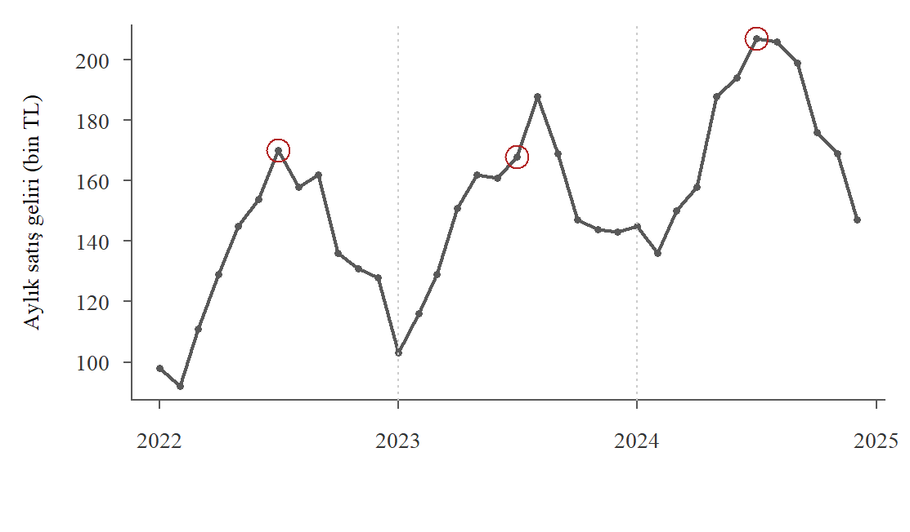
Şekil 4.23 üç özelliği birden gösterir. Birincisi, seri üç yıl boyunca yükselen bir eğilim taşımaktadır. İlk yılın aylık ortalaması 134.5 bin TL iken son yılın aylık ortalaması 172.9 bin TL olarak bulunur.
İkincisi, yıl içinde düzenli bir dalgalanma vardır. Halkalarla işaretlenen temmuz ayları her yıl grafiğin üst bölgesindedir, ocak ve şubat ayları ise dip noktalarındadır. Bu örüntü üç yılda da tekrarlandığı için rastlantı değildir.
Dikkat edilirse 2023 yılında en yüksek değer temmuzda değil ağustostadır. Bu, mevsimselliğin olmadığı anlamına gelmez. Mevsimsel örüntü yılın hangi döneminde yoğunlaşma olacağını belirler, tepe noktasının tam olarak hangi aya düşeceğini değil. Rastlantısal dalgalanma tepeyi bir ay öteye kaydırabilir. Nitekim serinin tamamına bakıldığında her yaz belirgin bir yükselme, her kış belirgin bir düşüş görülmektedir.
Üçüncüsü, dalgalanmanın şiddeti zaman içinde belirgin biçimde değişmemektedir.
Bu üç gözlemi ayırt etmek önemlidir. 2024 temmuzunda gerçekleşen 207 bin TL’lik satış geliri, seriye tek başına bakan birine olağanüstü görünebilir. Oysa hem yükselen eğilimin hem de her yıl tekrarlayan yaz artışının sonucudur, yani beklenen bir değerdir.
Örnek 4.16 Gerçek iş verilerinde eğilim, mevsimsellik ve kırılmalar çoğu zaman bir arada bulunur. Şekil 4.24 eticaret_gunluk veri kümesindeki günlük sipariş sayılarını göstermektedir. Kalın çizgi, her günün kendisi ve çevresindeki altı günün ortalaması olan 7 günlük hareketli ortalamadır.
plot(eticaret_gunluk$tarih, eticaret_gunluk$siparis_sayisi, type = "l", xaxt = "n",
col = "gray60", xlab = "", ylab = "Günlük sipariş sayısı")
ay_basi <- seq(min(eticaret_gunluk$tarih), by = "2 months", length.out = 6)
axis(1, at = ay_basi, labels = c("Oca", "Mar", "May", "Tem", "Eyl", "Kas"))
hareketli_ort <- stats::filter(eticaret_gunluk$siparis_sayisi, rep(1 / 7, 7), sides = 2)
lines(eticaret_gunluk$tarih, hareketli_ort, lwd = 2)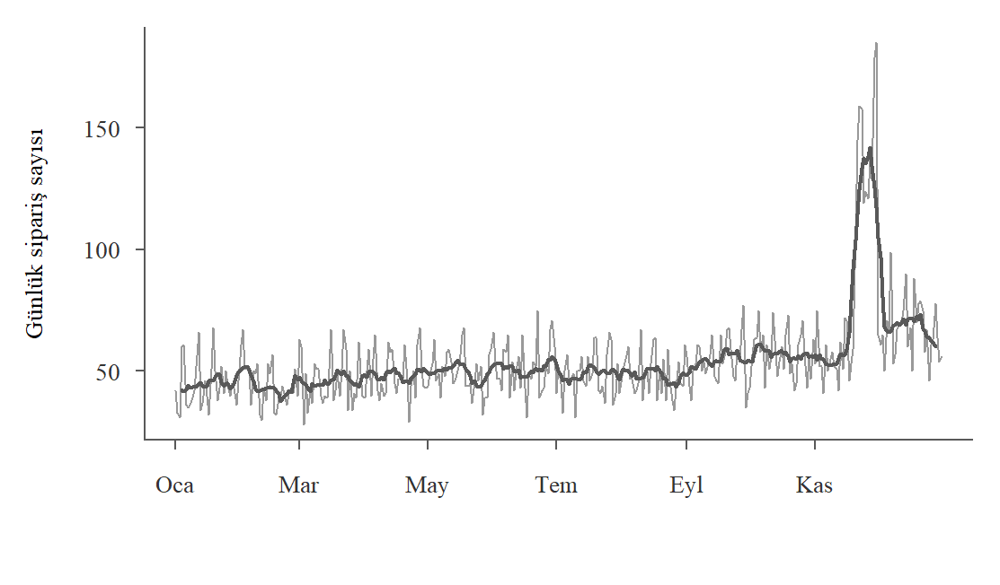
Haftanın günlerine göre ortalama sipariş sayılarını hesaplayalım:
gun_adi <- c("Pzt", "Sal", "Çar", "Per", "Cum", "Cmt", "Paz")
haftanin_gunu <- factor(gun_adi[as.integer(format(eticaret_gunluk$tarih, "%u"))],
levels = gun_adi)
round(tapply(eticaret_gunluk$siparis_sayisi, haftanin_gunu, mean), 1) Pzt Sal Çar Per Cum Cmt Paz
48.7 47.0 48.1 50.7 53.0 62.4 68.1 Şekil 4.24 üç özelliği birlikte göstermektedir. Birincisi, yıl boyunca yükselen bir eğilim vardır. Günlük ortalama sipariş sayısı ocakta 44 iken ekimde 57 kadardır. İkincisi, seri sürekli olarak küçük dişler çizer. Bu dişler haftalık bir mevsimselliğin sonucudur. Pazar günleri ortalama 68 sipariş gelirken salı günleri bu sayı 47 kadardır. Burada tekrarlayan örüntü yıl içinde değil hafta içinde ortaya çıkmaktadır. Hareketli ortalama bu haftalık dalgalanmayı düzleştirerek eğilimi görmeyi kolaylaştırır. Üçüncüsü, kasım ayının sonunda indirim kampanyası nedeniyle seride belirgin bir sıçrama vardır. Yılın en yoğun günü 30.11 tarihindeki 185 siparişle bu dönemdedir. Kampanya bittikten sonra sipariş sayısı yeniden eğilimin çizdiği düzeye döner.
Zaman serisi grafiklerinin başka örnekleri için Temel Kavramlar bölümüne bakabilirsiniz (bkz. Bölüm 3). Orada BIST100 endeksinin günlük kapanış değerleri (Şekil 3.6) ve ülkelerde doğumda yaşam beklentisinin gelişimi (Şekil 3.7) çizgi grafikleriyle gösterilmiştir. Gerçek makroekonomik serilerde eğilim, kırılma ve oynaklığı ayırt etmeye çözümlü alıştırmalarda döneceğiz (bkz. Alıştırma 4.7).
Bu bölümde dağılımın biçimini gözle tanıdık. Çarpıklığın ve tepe sayısının histogramdan nasıl okunacağını gördük. Ancak gözle yapılan bu okuma bir yere kadar gider. “Biraz çarpık” ile “epeyce çarpık” arasındaki farkı söylemek, hele iki dağılımın hangisinin daha çarpık olduğuna karar vermek gözle güvenilir biçimde yapılamaz.
Bir sonraki bölümde bu özellikleri sayıya dökeceğiz (Bölüm 5). Çarpıklık katsayısı burada gözle gördüğümüz asimetriyi tek bir sayıyla ölçer, basıklık katsayısı ise kuyrukların ağırlığını verir. Böylece resimle sayı birbirini tamamlar.
Alıştırma 4.1 Bir kafede 30 müşterinin siparişini bekleme süresi (dakika) aşağıdaki gibi kaydedilmiştir.
\[ \begin{aligned} &3,\ 7,\ 12,\ 5,\ 9,\ 15,\ 8,\ 11,\ 4,\ 6,\ 14,\ 10,\ 2,\ 18,\ 7,\\ &9,\ 13,\ 6,\ 11,\ 8,\ 16,\ 5,\ 10,\ 7,\ 12,\ 9,\ 4,\ 13,\ 8,\ 11 \end{aligned} \]
Genişliği 4 dakika olan sınıflarla frekans tablosunu kurunuz. Tabloya göreli frekans, birikimli frekans ve birikimli yüzde sütunlarını da ekleyiniz. Müşterilerin yüzde kaçı 12 dakikadan az beklemiştir?
Çözüm
En küçük gözlem 2, en büyüğü 18’dir. Genişliği 4 olan sınıflarla bütün veriyi kapsamak için 0’dan başlayıp 20’ye kadar gitmek yeterlidir.
bekleme <- c(3, 7, 12, 5, 9, 15, 8, 11, 4, 6, 14, 10, 2, 18, 7,
9, 13, 6, 11, 8, 16, 5, 10, 7, 12, 9, 4, 13, 8, 11)
sinir <- seq(0, 20, by = 4)
gruplar <- cut(bekleme, breaks = sinir, right = FALSE)
frekans <- as.numeric(table(gruplar))
n <- length(bekleme)
data.frame(sinif = levels(gruplar),
frekans = frekans,
goreli = round(frekans / n, 4),
yuzde = round(100 * frekans / n, 2),
birikimli = cumsum(frekans),
birikimli_yuzde = round(100 * cumsum(frekans) / n, 2)) sinif frekans goreli yuzde birikimli birikimli_yuzde
1 [0,4) 2 0.0667 6.67 2 6.67
2 [4,8) 9 0.3000 30.00 11 36.67
3 [8,12) 11 0.3667 36.67 22 73.33
4 [12,16) 6 0.2000 20.00 28 93.33
5 [16,20) 2 0.0667 6.67 30 100.00Frekanslar toplamı 30, yani gözlem sayısına eşittir. Göreli frekanslar toplamı 1, birikimli yüzdenin son değeri 100’dür. Bu üç denetim tutuyorsa tablo doğru kurulmuş demektir.
12 dakikadan az bekleyenler ilk üç sınıfta yer alır, çünkü üçüncü sınıf \([8,12)\) üst sınırı hariç tutar. Birikimli yüzde sütununun üçüncü satırı doğrudan yanıtı verir, müşterilerin %73.33’ü 12 dakikadan az beklemiştir.
Dikkat ediniz, soru “12 dakikadan az” dediği için sınıf sınırının hangi tarafa dahil olduğu belirleyicidir. right = FALSE seçeneği sol sınırı dahil edip sağ sınırı hariç tutar, bu da soruyla uyumludur.
Alıştırma 4.2 Bir işletmede 70 çalışanın aylık fazla mesai süreleri (saat) aşağıdaki tabloda özetlenmiştir.
| Sınıf | Frekans |
|---|---|
| 20-30 | 8 |
| 30-40 | 17 |
| 40-50 | 25 |
| 50-60 | 14 |
| 60-70 | 6 |
Çözüm
a) Birikimli frekanslar sırasıyla 8, 25, 50, 64 ve 70’tir. Son değer toplam çalışan sayısına eşittir.
b) 50 saat, üçüncü sınıfın üst sınırıdır. Bu sınıra kadar 50 çalışan birikmiştir.
\[ \frac{50}{70} \times 100 = 71.43 \]
Çalışanların %71.43’ü 50 saatten az fazla mesai yapmıştır. Burada ara değer hesabına gerek yoktur, çünkü sorulan değer tam bir sınıf sınırıdır.
c) Birikimli frekanslar sınıf üst sınırlarına, yani 30, 40, 50, 60 ve 70 saatlere işaretlenip noktalar birleştirilir. Gözlemlerin yarısı 35 çalışana karşılık gelir. Dikey eksende 35 seviyesinden yatay bir çizgi çekilir, eğriyi kestiği noktadan yatay eksene inilir ve 40-50 sınıfının içinde bir değer okunur. Bu sınıfa girmeden önce 25, bu sınıfın sonunda ise 50 çalışan birikmiştir.
Grafikten okunan değer bir kestirimdir, çünkü ogive sınıf içinde gözlemlerin düzgün dağıldığını varsayar. Ham veri elinizde olsaydı bulacağınız değer biraz farklı çıkardı.
Alıştırma 4.3 80 gözlemden oluşan bir veri kümesinde en küçük değer 13, en büyük değer 145’tir. Histogram için kaç sınıf kullanılmalıdır? Sınıf genişliği ne olmalıdır?
Çözüm
Sınıf sayısı için tek bir doğru yanıt yoktur, yaygın kullanılan iki kural şudur.
Sturges kuralı.
\[ k = 1 + \log_2 n = 1 + \log_2 80 = 1 + 6.32 = 7.32 \approx 8 \]
Karekök kuralı.
\[ k = \sqrt{n} = \sqrt{80} = 8.94 \approx 9 \]
n <- 80
c(sturges = ceiling(1 + log2(n)), karekok = ceiling(sqrt(n)))sturges karekok
8 9 Veri aralığı \(145 - 13 = 132\)’dir. 8 sınıf seçilirse genişlik \(132/8 = 16.5\), 9 sınıf seçilirse \(132/9 = 14.67\) olur. Uygulamada yuvarlak sınırlar tercih edilir. Ancak sınırları seçerken bütün gözlemlerin kapsandığından emin olmak gerekir. Örneğin 10’dan başlayıp 15 genişlikle kurulan 9 sınıf 10-145 aralığını kaplar. En büyük değer olan 145 son sınıfın üst sınırına denk gelir ve sağ sınır hariç tutulursa tablonun dışında kalır. Bu yüzden 0’dan başlayıp 15 genişlikle 10 sınıf (0-150) ya da 10’dan başlayıp 20 genişlikle 7 sınıf (10-150) kurmak daha güvenlidir.
Asıl mesele kuralın kendisi değildir. Çok az sınıf seçilirse dağılımın biçimi kaybolur, çok fazla sınıf seçilirse grafik gürültüye boğulur ve her sınıfa bir iki gözlem düşer. Bu nedenle sınıf sayısı birkaç farklı değerle denenip dağılımın biçimi kararlı biçimde ortaya çıkan seçenek tercih edilir. Şekil 4.10 ve Şekil 4.11 bu etkiyi göstermektedir.
Alıştırma 4.4 Bir üniversitede 200 öğrenciye kampüse ulaşım tercihleri sorulmuş ve sonuçlar aşağıdaki çapraz tabloda özetlenmiştir.
| Otobüs | Metro | Yürüyerek | Toplam | |
|---|---|---|---|---|
| Kadın | 45 | 30 | 15 | 90 |
| Erkek | 44 | 55 | 11 | 110 |
| Toplam | 89 | 85 | 26 | 200 |
Çözüm
tablo <- matrix(c(45, 30, 15, 44, 55, 11), nrow = 2, byrow = TRUE,
dimnames = list(cinsiyet = c("Kadın", "Erkek"),
ulasim = c("Otobüs", "Metro", "Yürüyerek")))
round(100 * prop.table(tablo, 1), 1) # satır yüzdesi ulasim
cinsiyet Otobüs Metro Yürüyerek
Kadın 50 33.3 16.7
Erkek 40 50.0 10.0round(100 * prop.table(tablo, 2), 1) # sütun yüzdesi ulasim
cinsiyet Otobüs Metro Yürüyerek
Kadın 50.6 35.3 57.7
Erkek 49.4 64.7 42.3a) Kadınların metro kullanma oranı, kadın satırının toplamına bölünerek bulunur.
\[ \frac{30}{90} \times 100 = 33.3 \]
b) Metro kullananların kadın oranı, metro sütununun toplamına bölünerek bulunur.
\[ \frac{30}{85} \times 100 = 35.3 \]
c) İki soruda pay aynıdır, çünkü her ikisi de metro kullanan kadınları sayar. Ancak paydalar farklıdır. Birinci soruda payda bütün kadınlar (90), ikinci soruda metro kullanan herkestir (85).
Bu ayrım çapraz tablo okumanın en sık yapılan hatasıdır. Yürüyerek gelenlere bakıldığında fark daha da belirginleşir. Kadınların yalnızca %16.7’si yürüyerek gelmektedir, buna karşılık yürüyerek gelenlerin %57.7’si kadındır. İlk sayı küçük, ikincisi büyüktür ve ikisi de doğrudur.
Hangi yüzdenin kullanılacağı soruya bağlıdır. “Cinsiyete göre ulaşım tercihi değişiyor mu” sorusu satır yüzdelerini gerektirir, çünkü her cinsiyetin kendi içindeki dağılımı karşılaştırılır.
Alıştırma 4.5 Bir sınavdan alınan 22 not aşağıdaki dal-yaprak çiziminde özetlenmiştir.
5 | 2 5 8
6 | 1 3 3 7 8
7 | 0 1 4 4 5 8 9
8 | 2 3 6 8
9 | 1 3 5Çözüm
a) 7 dalındaki yaprak sayısı 7’dir.
b) Dal-yaprak çizimi veriyi sıralı gösterdiği için bu bilgiler doğrudan okunur. En düşük not 5 dalının ilk yaprağıyla 52, en yüksek not 9 dalının son yaprağıyla 95’tir. 6 dalında 3 yaprağı iki kez görünür, yani 63 notu iki öğrencide tekrarlanmıştır. 7 dalındaki iki 4 yaprağı da 74 notunun iki kez alındığını gösterir.
c) Histogram yalnızca her sınıfa kaç gözlem düştüğünü gösterir, gözlemlerin kendi değerleri kaybolur. Dal-yaprak çizimi ise hem dağılımın biçimini verir hem de bütün gözlemleri okunur biçimde saklar. Yukarıdaki çizimden 63 notunun iki kez tekrarlandığını görebiliriz, histogramdan bunu söylemek mümkün değildir.
Buna karşılık dal-yaprak çizimi yalnızca küçük veri kümelerinde kullanışlıdır. Birkaç yüz gözlemde yapraklar satıra sığmaz ve grafik okunmaz hale gelir.
Alıştırma 4.6 Bir şirketin iki şubesinde müşteri memnuniyeti oranı ölçülmüştür: A şubesinde yüzde 82, B şubesinde yüzde 86. Bu iki oranı, dikey ekseni 80’den başlayan ve 0’dan başlayan iki ayrı çubuk çizimiyle gösteriniz. Hangi grafik yanıltıcıdır? Neden?
Çözüm
oran <- c("A şubesi" = 82, "B şubesi" = 86)
barplot(oran, ylim = c(80, 87), xpd = FALSE, col = "gray70", ylab = "Memnuniyet oranı (%)")
box(bty = "l")
barplot(oran, ylim = c(0, 100), col = "gray70", ylab = "Memnuniyet oranı (%)")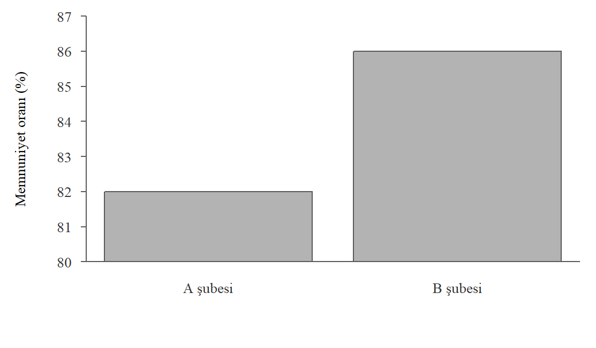
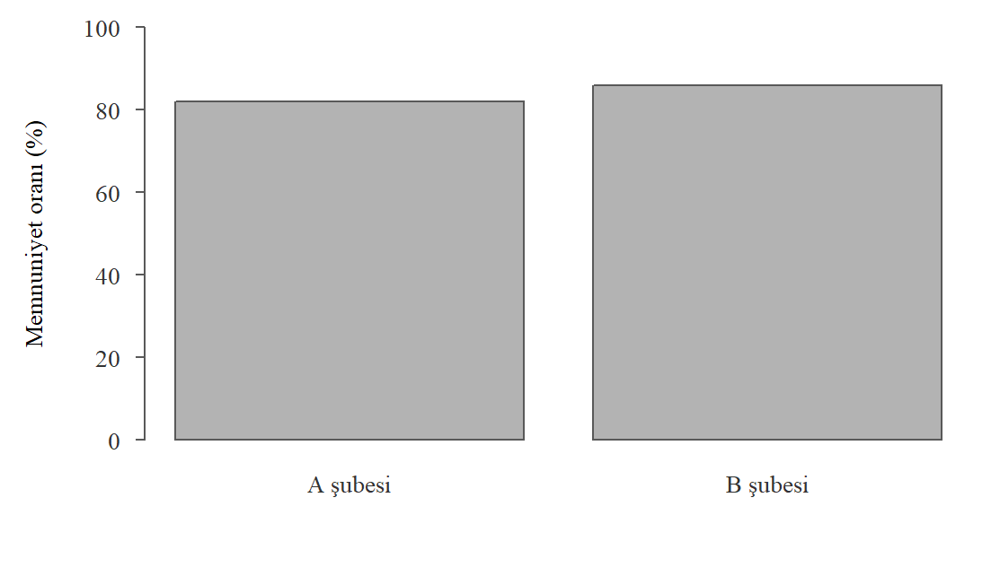
Birinci grafikte (Şekil 4.25 (a)) B şubesinin çubuğu A şubesininkinin üç katı yüksekliğindedir. Çubuklar yalnızca 80’in üzerindeki kısmı gösterdiği için yükseklikleri 2 ve 6 birimdir. Oysa iki oran arasındaki fark yalnızca 4 puandır; B şubesinin oranı A şubesininkinden yaklaşık yüzde 5 fazladır. Okur, çubukların boyuna bakarak iki şube arasında gerçekte olmayan büyük bir fark görür.
Çubuk çiziminde bilgi çubuğun uzunluğuyla verilir. Bu yüzden çubuk çiziminde dikey eksen sıfırdan başlamalıdır. İkinci grafik (Şekil 4.25 (b)) farkı olduğu gibi gösterir. Küçük bir farkı vurgulamak gerekiyorsa eksen kesilmek yerine farkın kendisi, yani 4 puan, ayrıca raporlanabilir. Başka bir seçenek, değerleri çubukla değil noktayla göstermektir. Nokta grafiğinde bilgi noktanın konumuyla verildiği için eksenin sıfırdan başlaması gerekmez.
Alıştırma 4.7 Ülke veri kümesini kullanarak Türkiye’nin kişi başına GSYİH (kisi_basi_gsyih) ve yıllık enflasyon (enflasyon) serilerini çizgi grafiğiyle gösteriniz. Serileri eğilim, mevsimsellik, kırılma ve oynaklık bakımından yorumlayınız.
Çözüm
load("Data/ulkeler.RData")
turkiye <- subset(ulkeler, ulke == "Türkiye")
plot(turkiye$yil, turkiye$kisi_basi_gsyih, type = "l", lwd = 2, col = "black",
xlab = "", ylab = "ABD doları")
plot(turkiye$yil, turkiye$enflasyon, type = "l", lwd = 2, col = "black",
xlab = "", ylab = "Yüzde")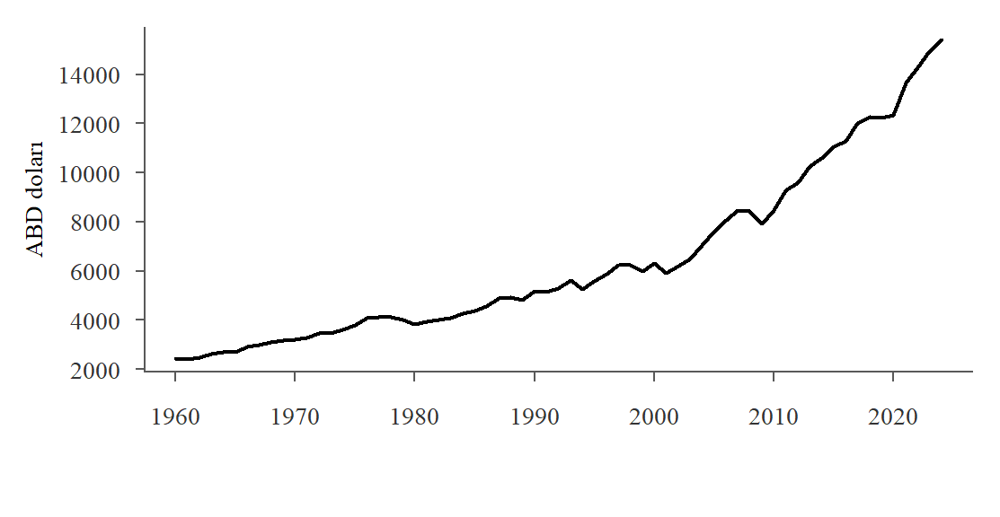
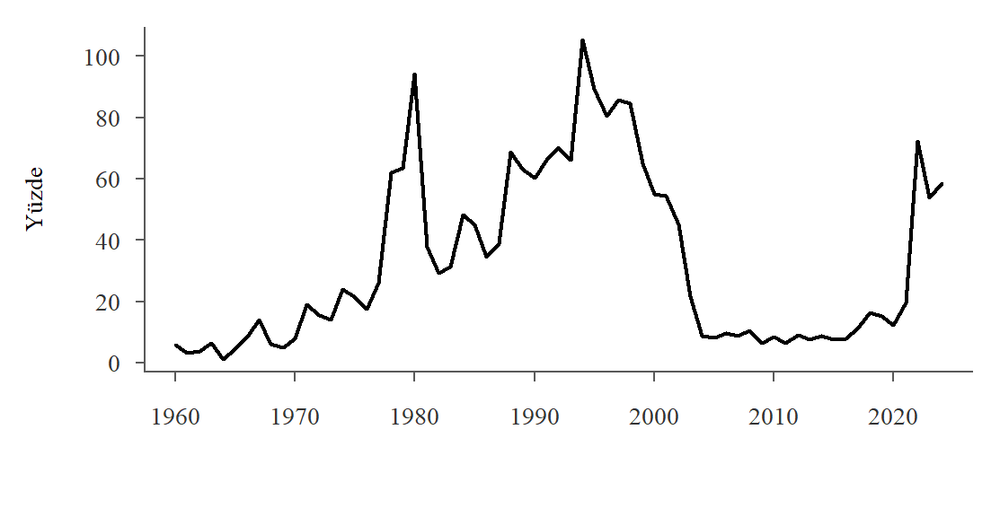
Kişi başına GSYİH (Şekil 4.26 (a)) belirgin bir yükselen eğilime sahiptir. 1960 yılında yaklaşık 2400 dolar olan kişi başına gelir, 2024 yılında yaklaşık 15400 dolara ulaşmıştır. Eğilim kesintisiz değildir. Gelirin bir önceki yıla göre düştüğü yıllar arasında 1978-1980, 1994, 2001 ve 2009 gibi ekonomik kriz dönemleri öne çıkar. Bu seride mevsimsellik görülmez, çünkü veri yıllıktır. Mevsimsel dalgalanmalar yıl içinde ortaya çıkar ve yıllık değerde görünmez.
Enflasyon serisinde (Şekil 4.26 (b)) ise uzun dönemde tek yönlü bir eğilim yoktur. Bu seriyi en iyi tanımlayan özellikler kırılmalar ve oynaklıktır. Enflasyon 1970’lerin sonundan 2000’lerin başına kadar yüksek seyretmiş ve 1994 yılında yüzde 105 ile zirveye ulaşmıştır. 2004-2017 döneminde yıllık enflasyon yüzde 6.3 ile 11.1 arasında kalmış, 2022 yılında ise yeniden yüzde 72 düzeyine sıçramıştır. Serinin seviyesi dönemden döneme değiştiği için tek bir ortalama bu seriyi iyi özetlemez.
Problem 4.1 Aşağıdaki durumların her biri için hangi görsel aracın uygun olduğunu belirtiniz ve kısaca gerekçelendiriniz.
Problem 4.2 Bir fabrikada 40 işçinin bir görevi tamamlama süresi (saniye) kaydedilmiştir.
\[ \begin{aligned} &34,\ 52,\ 41,\ 28,\ 47,\ 55,\ 38,\ 44,\ 31,\ 49,\ 57,\ 36,\ 42,\ 50,\ 45,\ 39,\ 53,\ 33,\ 46,\ 51,\\ &29,\ 43,\ 48,\ 37,\ 54,\ 40,\ 32,\ 56,\ 44,\ 35,\ 47,\ 30,\ 58,\ 41,\ 49,\ 38,\ 52,\ 45,\ 42,\ 46 \end{aligned} \]
Problem 4.3 Bir kentte 120 dairenin aylık kirası aşağıdaki tabloda özetlenmiştir. Kiralar bin TL cinsindendir.
| Sınıf | Frekans |
|---|---|
| 10-15 | 14 |
| 15-20 | 31 |
| 20-25 | 38 |
| 25-30 | 24 |
| 30-35 | 13 |
Problem 4.4 Aşağıdaki veri bir spor salonuna bir gün içinde gelen üyelerin yaşlarını göstermektedir.
\[ 19,\ 23,\ 21,\ 34,\ 27,\ 45,\ 22,\ 31,\ 28,\ 24,\ 38,\ 26,\ 41,\ 29,\ 33,\ 25,\ 36,\ 22,\ 30,\ 27 \]
stem() fonksiyonuyla çiziminizi denetleyiniz.Problem 4.5 hane_ornek.RData verisini kullanarak aşağıdaki soruları yanıtlayınız.
sigara ile ozel_sigorta değişkenlerinin çapraz tablosunu oluşturunuz.Problem 4.6 mutluluk.RData verisini kullanarak aşağıdaki soruları yanıtlayınız.
ort_gun_kazanc değişkeninin histogramını çiziniz. Sınıf sayısını 5, 10 ve 25 alarak üç ayrı histogram üretiniz ve karşılaştırınız.Problem 4.7 bist100.rda verisini kullanarak aşağıdaki soruları yanıtlayınız.
Problem 4.8 ulkeler.RData verisini kullanarak aşağıdaki soruları yanıtlayınız.
bolge ile gelir_grubu değişkenlerinin çapraz tablosunu oluşturunuz. Sahra Altı Afrika ülkelerinin yüzde kaçı düşük gelirlidir? Bu soruyu yanıtlamak için satır yüzdelerini mi, sütun yüzdelerini mi kullandınız?co2_kisi_basi) histogramını çiziniz ve dağılımın biçimini yorumlayınız. Değişkenin logaritmasının histogramında ne değişiyor? Değeri sıfır olan bir gözlemin logaritmasını almaya çalışırsanız ne olur?internet) histogramını 10 puanlık sınıflarla çiziniz. Dağılım hangi yöne çarpıktır? Oranın yüzde 100’ü aşamaması dağılımın biçimini nasıl etkiler?kadin_isgucu) histogramını çiziniz. Dağılım simetrik mi, çarpık mı? Kaç tepesi vardır?Problem 4.9 eticaret.RData verisini kullanarak aşağıdaki soruları yanıtlayınız.
tutar) histogramını çiziniz. Dağılımın biçimini yorumlayınız. Aynı histogramı tutarın logaritmasıyla çizdiğinizde ne değişiyor?musteri_tipi) ile siparişin verildiği cihazın (cihaz) çapraz tablosunu oluşturunuz. “Yeni müşterilerin yüzde kaçı mobil cihazdan sipariş vermiştir?” sorusunu hangi yüzdelerle yanıtlarsınız?eticaret_gunluk verisindeki günlük ciroyu (ciro) zaman serisi grafiğiyle gösteriniz. Grafikte eğilim, haftalık mevsimsellik ve kampanya dönemini ayırt edebiliyor musunuz?Problem 4.10 eticaret.RData verisindeki teslim süresi (teslim_suresi) gün olarak kaydedilmiş, tam sayı değerli bir değişkendir.
table() ile teslim süresinin frekans tablosunu oluşturunuz.hist(eticaret$teslim_suresi) komutuyla öntanımlı ayarlarla bir histogram çiziniz. Çubukların arasında neden boşluklar oluşuyor?breaks = seq(0.5, 10.5, by = 1) biçiminde tam sayıların arasına koyarak histogramı yeniden çiziniz. İki grafiği karşılaştırınız.Problem 4.11 ogrenci_anket.RData verisini kullanarak aşağıdaki soruları yanıtlayınız.
kaldigi_yer) frekans tablosunu, çubuk çizimini ve pasta grafiğini oluşturunuz. Hangi grafik karşılaştırmayı kolaylaştırıyor?istatistik_zorluk) çubuk çizimini çiziniz. Çubukları sıklığa göre mi, puan sırasına göre mi dizmek daha uygundur? Neden?Problem 4.12 Grafiklerle yanıltma konusunda aşağıdaki soruları yanıtlayınız.
Problem 4.13 besiktas_ev.RData ve bakirkoy_ev.RData verilerini kullanarak aşağıdaki soruları yanıtlayınız.